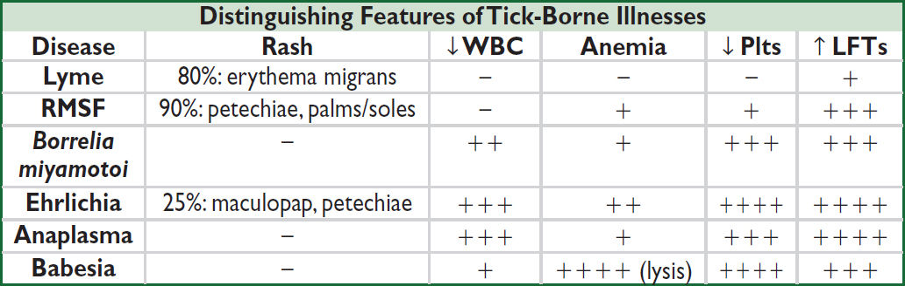

Definitions and clinical manifestations
• Pneumonia: s/s (fever, cough, purulent sputum, dyspnea) + new infiltrate on chest imaging
• Community-acquired pneumonia (CAP): pneumonia acquired outside of hospital setting
• Hospital-acquired pneumonia (HAP): pneumonia acquired ≥48 hrs after hospitalization
• Ventilator-associated pneumonia (VAP): pneumonia acquired ≥48 hrs after intubation
• Lung empyema: accumulation of pus in pleural space
• Lung abscess: parenchymal necrosis with confined cavitation
• Aspiration pneumonitis: acute lung injury after inhalation of gastric contents without infection, though bacterial infection can occur within 24–72 hrs of injury
Microbiology of Pneumonia |
|
Clinical Setting |
Etiologies |
CAP (AJRCC 2019;200:7) |
No pathogen identified in 50–60%, virus alone in ~25%, bacteria alone in ~10%, virus-bacteria coinfection in <5% Viruses: influenza, RSV, hMPV, parainfluenza, rhinovirus, coronavirus S. pneumoniae (most common bacterial cause) S. aureus (espec. post-influenza) Mycoplasma, Chlamydia (espec. in young & healthy) H. influenzae, M. catarrhalis (espec. in COPD) Legionella (espec. in elderly, smokers, ↓ immunity, TNF inhibitors) Klebsiella & other GNR (espec. in alcoholics & aspiration) |
HAP/VAP |
S. aureus, Pseudomonas, Klebsiella, E. coli, Enterobacter, Acinetobacter, Steno. IV abx w/in 90 d risk factor for MDR. Viral ~20% cases. |
Empyema |
S. pneumo, S. aureus, E. coli, Klebsiella, H. influenzae, anaerobes |
Lung abscess |
Often polymicrobial, incl. oral flora. S. aureus, anaerobes, Strep (anginosus, GAS), GNR (Klebsiella, E. coli, Pseudomonas), Nocardia, Actinomyces, fungi, mycobacteria, Echinococcus |
Immunosupp. |
Above + Pneumocystis, Cryptococcus, Nocardia, non-TB myco- bacteria (NTM), CMV, invasive molds |
Diagnostic studies (AJRCC 2019;200:e45)
• Sputum Gram stain/Cx: reliable if high quality (ie, sputum not saliva; <10 squam cells/lpf). If bacterial PNA should be purulent (>25 PMN/lpf). Yield ↓ >10 h after abx (CID 2014;58:1782).
• Procalcitonin: ↑ in acute bacterial (not viral) PNA. Consider stopping abx if levels <0.25 ng/ml (<0.5 ng/mL in ICU Pts) or ↓ ≥80% from peak. ↓ abx exposure by 2–3 d (Lancet ID 2016;16:819 & 2018;18:95). Not validated in immunosuppressed hosts. Levels harder to interpret in CKD. False ⊕ in cardiac arrest, shock, burns, surgery.
• CXR (PA & lateral; see Radiology inserts)
• HIV test (if unknown); MRSA nares swab in HAP/VAP (if ⊖ 96% NPV for MRSA PNA)
• Consider in severe disease (otherwise not recommended):
Legionella urinary Ag (detects L. pneumophila L1 serotype, 60–70% of clinical disease)
S. pneumoniae urinary Ag (Se 70%, Sp >90%)
Blood cultures (before antibiotics!): ⊕ in ~10% of inPts, depending on pathogen
• If clinical suspicion for mTB: (induced) sputum AFB stain ×3 q ≥8h (w/ ≥1 early morning). Mycobact. cx (empiric respiratory isolation while pending); MTb DNA PCR if smear ⊕.
• Viral testing (DFA or PCR) on nasopharyngeal swab or sputum
• Bronchoscopy: immunosupp., critically ill, failure to respond, suspected PCP, inadequate/ ⊖ sputum cx (send Gram stain/cx, Legionella cx, fungal cx/wet prep, mycobacterial cx/smear, modified AFB stain, galactomannan)
• Reasons for failure to improve on initial treatment:
Insufficient time: may take ≥72 h to see improvement (fever persists >4 d in ~20%)
Insufficient drug levels for lung penetration (eg, vanco trough <15–20 μg/mL)
Resistant organisms or superinfxn: eg, MRSA, Pseudo.; consider bronchoscopy
Wrong dx: fungal/viral, chemical pneumonitis, PE, CHF, ARDS, DAH, ILD; consider CT
Parapneumonic effusion/empyema/abscess: if CXR ⊖, consider bedside US or CT. If effusion >1 cm, drain & send fluid pH, gluc, Gram stain & Cx.
Metastatic infection (eg, endocarditis, septic arthritis)
Triage
• qSOFA predicts poor outcomes, prolonged ICU stay, and in-hospital mortality if >2 of 3: RR>22, AMS, SBP<100 (JAMA 2016; 315:801)
Treatment (NEJM 2019;380:651; AJRCC 2019;200:e45) |
|
Scenario |
Regimen |
CAP (outPt) |
Amoxicillin, azithro, or doxy (avoid latter two if >25% resistance locally) |
CAP (ward) |
[3rd-gen ceph + azithro] or levoflox; omadacycline ≈ FQ (NEJM 2019;380:517) |
3rd-gen ceph + azithro. Only cover MRSA or Pseudomonas if risk factors (prior PsA PNA, MRSA infection, recent hospitalization, IV abx) |
|
HAP/VAP |
[Pip-tazo or cefepime or carbapen.] + [vanc or linezolid]. May add resp FQ or azithro if concerned for atypicals. Daptomycin not active in lungs. |
Empyema/ abscess |
[3rd-gen ceph + MNZ] or amp-sulbactam. Only cover Pseudomonas or MRSA if risk factors. Empyema: drain if >1 cm ± chest tube. Abscess: drainage not required. De-escalate to PO abx based on clinical improvement & micro. |
• Avoid quinolones if suspect TB. When possible, de-escalate abx based on sensitivities.
• Steroids: not unless indicated for shock or COPD exacerbation; may ↓ mortality, mech vent, & ARDS in severe CAP (Cochrane 2017;12:CD007720). Avoid in influenza.
• Duration: CAP: 5–7 days, can de-escalate IV abx to PO after clinical improvement. HAP/VAP: 7 days. Empyema/abscess: 2–6 wks based on complexity, drainage.
Prevention
• All persons >65 or age 19–64 w/ CHF, lung disease, cirrhosis, DM, EtOH, smoker, immunosupp. (eg, ESRD, organ transplant, HIV, leukemia, lymphoma, asplenia)
• PCV20 vaccine or PCV15 + PPSV23 1 yr later
VIRAL RESPIRATORY INFECTIONS
URI, bronchitis, bronchiolitis, pneumonia (Lancet 2011;377:1264)
Microbiology & epidemiology (http://www.cdc.gov/flu/weekly)
• Typical pathogens: Short, mild = rhinovirus, other non-SARS-CoV-2 coronavirus.
Longer, more severe or complicated = influenza, parainfluenza, RSV, adenovirus, metapneumovirus, COVID-19 (vide infra). Can be esp. severe in immunosupp.
Diagnosis
• Sx: fever, cough, myalgias, SOB, wheezing, sore throat, rhinorrhea, malaise, confusion
• Respiratory viral panel on nasal swab or sputum/BAL; rapid flu nasopharyngeal swab preferred to nasal swab (Se 50–70%, Sp >90%); RT-PCR for flu A/B (>95% Se & Sp)
Treatment (NEJM 2017;390:697)
• Influenza (A & B):
• Neuraminidase inhib. (eg, oseltamivir); must start w/in 48 h of sx for low-risk; for critically ill or immunosupp., start ASAP even if >48 h. Peramivir IV if unable to tolerate PO.
• Endonuclease inhib. (baloxavir), superior to oseltamivir in ↓ sx & viral load on 1st day of Rx, but resistance emerging; no data in severe influenza (NEJM 2018; 379:913)
• RSV: can consider inhaled ribavirin in immunosupp, but very expensive & rarely used
Prevention
• Inactivated influenza vaccine: rec for all >6 mo of age.
• Isolation, droplet precautions for inpatients strongly recommended
• Ppx for high-risk contacts of confirmed influenza: oseltamivir × 7 d or baloxavir single dose
CORONAVIRUS (COVID-19) / SARS-COV-2 INFECTION
Microbiology & epidemiology
• Person-to-person transmission via respiratory particles; asx & pre-sx transmission can occur
• Incubation period: up to 14 days, median time of 4–5 days from exposure to sx onset
Presentation
• Ranges from asx to severe illness. Of those with sx, 81% mild-to-moderate, 14% severe (hypoxia), 5% critical (ARDS, shock, multiorgan failure) (JAMA 2020:323;13)
• Common sx: fever, chills, cough, dyspnea, myalgias, HA, N/V, diarrhea, loss of smell/taste
• Risk factors for severe illness: age ≥65, CVD, DM, stroke, lung dx, CKD, obesity
Diagnosis
• RT-PCR testing of nasopharynx, lower respiratory tract, or anterior nares
• Rapid antigen testing of anterior nares (less Se than PCR)
• CXR: typically bilateral opacities (esp peripheral), can be nl early; consider CT if dx ?
Treatment (https://www.covid19treatmentguidelines.nih.gov/)
• Non-hospitalized: mAb, paxlovid and molnupiravir if risk factors for severe disease
• Hospitalized w/ suppl O2: dexamethasone ± remdesivir (inhibits vRNA polymerase)
• Hospitalized w/ mechanical ventilation or ECMO: dexamethasone + anti IL6 (tocilizumab/ sarilumab) or anti JAK (baricitinib/tofacitinib) if rapidly ↑ O2 requirement but not intubated
• Anticoag. due to high rate of thrombosis; Ppx vs. Rx dosing based on severity and risk
Prevention
• Vaccines against spike protein highly effective. Infxn may occur but severity much lower.
• See CDC website for quarantine guidelines (https://www.cdc.gov/coronavirus/2019-ncov/your-health/quarantine-isolation.html)
Fungal diagnostics
• Antigen detection
1,3-β-D glucan (Se 75%, Sp 85%): Candida, Aspergillus, Histo, Coccidio, PCP, for invasive infxn in immunocomp host. Cannot detect Mucor, Rhizopus, Blasto, Crypto.
Galactomannan (Se 71%, Sp 89%): Aspergillus. BAL preferred. Test serum only if heme malig or HSCT. Not for screening or Rx monitoring in solid organ Tx, chronic granulomatous disease (false ⊕ w/ colonization).
Histo urine/serum Ag: Se of urine Ag 90% (serum 80%) if dissem; Sp limited by X-react
Crypto Ag (serum, CSF): sAg >90% Se & Sp in invasive, less for pulm. only unless HIV+
Blastomyces: urine >serum Ag, high Se but modest Sp given X-react w/ other fungi
• Culture: Candida grows in blood/urine Cx, but ↓ Se of BCx in deep tissue infection; others (eg, Crypto, Histo) ↓↓ Se of BCx; if suspect Coccidio alert lab (biohazard)
• Antibody detection: useful for Coccidio (serum IgG and IgM 7–21 days post exposure)
• Biopsy: no grinding of tissue if Zygomycetes suspected
Candida species
• Microbiology: normal GI flora; C. albicans & nonalbicans spp.
• Epidemiology: neutropenia, immunosupp., broad-spectrum abx, intravascular catheters (esp. if TPN), IVDU, abd surgery, DM, renal failure, age >65
• Clinical manifestations:
Mucocutaneous: cutaneous (eg, red, macerated lesions in intertriginous zones); oral thrush (exudative, erythematous or atrophic; if unexplained, r/o HIV); esophageal (odynophagia; ± oral thrush); vulvovaginal, balanitis
Candiduria: typically colonization due to broad-spectrum abx and/or indwelling catheter
Candidemia: ⊕ blood cx are never a contaminant! R/o retinal involvement (ophtho consult) & endocarditis w/ TTE ± TEE (esp. w/ prosthetic valve) as req ↑ Rx duration. May present w/ erythematous papules or pustules in immunosupp.
Candida in sputum: usually not a clinically significant pathogen
Hepatosplenic: typically, after prolonged neutropenia as cell counts are recovering
Treatment (CID 2016;62:409) |
|
Mucocutaneous |
Clotrimazole, nystatin, fluconazole, itraconazole |
Candiduria (if pyuria or sx of infxn) |
Fluconazole or intravesical ampho if severe infxn, immunosupp. or planned GU procedure. |
Candidemia w/o neutropenia |
Echinocandin (mica 1st line) if stable w/o prior azole exposure can consider fluc; remove CVC; test for azole-resist. |
Candidemia w/ neutropenia |
Echinocandin or ampho; remove CVC; test for azole-resist. |
Aspergillosis (Lancet 2021;397:499)
• ABPA: airway hypersensitivity secondary to aspergillus colonization
• Chronic pulmonary aspergillosis: includes aspergilloma (fungus ball), pulm. nodules, chronic cavitary and chronic fibrotic pulmonary aspergillosis that can present with subacute cough, dyspnea, hemoptysis; aspergilloma/nodules can be asymptomatic
• Invasive aspergillosis: seen in immunosupp., esp prolonged neutropenia. Primarily pulmonary, ie, PNA w/ chest pain, cough, hemoptysis; CT: solid/cavitary nodules, halo sign. Non-pulm. manifestations: rhinosinusitis (like Zygomycetes), CNS (brain abscesses, mycotic aneurysm), endophthalmitis (eye pain, visual changes), cutaneous, GI (typhlitis)
Rx: voriconazole or posaconazole preferred over ampho. For aspergilloma, ± resection.
Zygomycetes (eg, Mucor, Rhizopus)
• Epidemiology: diabetes (espec. those w/ prior DKA), heme malignancy, neutropenia, transplant, chronic steroids, iron overload, trauma, h/o voriconazole Rx or Ppx
• Clinical: rhinocerebral = severe periorbital/facial pain, swelling, vision changes, sinusitis, opthalmoplegia, nasal ulcerations/ necrosis, HA. Other: pulm. (PNA w/ infarct & necrosis); cutaneous (indurated painful cellulitis ± eschar); GI (necrotic ulcers); renal (flank pain, fever).
• Treatment (high mortality): 1st line is debridement + ampho. Can deescalate to posaconazole or isavuconazole if improving after debridement.
ENDEMIC FUNGI
Cryptococcus (CID 2010;50:291)
• Epidemiology: immunosupp. most susceptible (espec. AIDS, transplant recipients, and cirrhosis); can occur in healthy hosts (esp C. gattii)
• Clinical manifestations
CNS (meningoencephalitis): subacute HA, fever, meningismus, CN abnl, ± stupor
Other sites: pulm., GU, cutaneous, CNS cryptococcoma. With any crypto dx, LP all Pts.
• Dx: CSF cell counts vary in HIV vs. non-HIV; serum/CSF CrAg (Se 99%, Sp 86–100%); cx
• Treatment
CNS Rx has induction (ampho ± flucytosine × 2 wks), consolidation and maintenance (fluconazole) phases (NEJM 2013;368:1291); if ↑ ICP, may need repeat LP/VP shunt
Non-CNS disease (pulm., skin, bone, blood) in HIV ⊖ Pts: consider fluconazole
Histoplasmosis (CID 2007;45:807)
• Epidemiology: endemic to central & SE U.S., but sporadic cases throughout U.S.
• Clinical manifestations
Acute: PNA ± hilar LAN, often subacute, but high inoculum can cause acute severe PNA
Chronic lung disease: cough + B sx ± cavitary lesions (Ddx TB, blasto)
Disseminated (seen in immunosupp.): fever, fatigue, wt loss, mucocutaneous lesions, ΔMS, arthritis, pericarditis, interstitial infiltrates HSN, LAN, cytopenias
• Treatment: mild to mod: itraconazole; disseminated/severe: ampho → itraconazole
Coccidioidomycosis (CID 2016;63:112)
• Epidemiology: endemic to SW U.S., Central and South America
• Clinical manifestations
Acute: subclinical PNA, arthralgias, rash (erythema nodosum)
Chronic lung disease (seen in immunosupp): dyspnea, chest pain, hemoptysis, “B” sx
Disseminated (immunosupp, pregnant): meningitis, osteo, monoarthritis, cutaneous
• Treatment: no Rx for mild PNA in immunosupp.; ampho for severe/CNS involvement; azoles for extrathoracic w/o CNS involvement; some cases require debridement
Blastomycosis (CID 2008;46:1801)
• Epidemiology endemic to the eastern ½ of U.S.
• Clinical manifestations
Acute: PNA w/o hilar LAN that can progress to ARDS
Chronic: cough + “B” sx, fibronodular infiltrates, masses ± cavitary lesions (Ddx TB, histo)
Disseminated (seen in immunosupp.): rash (verrucous, ulcerated lesions), subcutaneous nodules, osteo, GU (prostatitis, epididymoorchitis), CNS involvement uncommon
• Treatment: mild to mod: itraconazole; disseminated/severe/CNS: ampho → itraconazole
Overview
• Many Pts have ≥1 risk (eg, DM, ESRD, transplant, extremes of age)
• Accurate dx of opportunistic infections and targeted Rx key in this population
• The following is not an exhaustive list, but a delineation of common or classic etiologies
Predisposition |
Classic Infectious Etiologies |
Humoral immune dysfunction (eg, CVID, myeloma) and asplenia |
Encapsulated bacteria: S. pneumo, H. flu, N. meningitidis (vaccinate against these 3, ideally prior to splenectomy) Other bacteria: E. coli and other GNRs, Capnocytophaga Parasites: Babesia, Giardia; Viruses: VZV, echovirus, enterovirus |
Granulocytopenia or neutropenia (includes DM, ESRD → functional impairment) |
Bacteria: Gram positive: coag ⊖ staph, S. aureus, viridans strep, S. pneumo, other strep; Corynebacterium spp., Bacillus spp. Gram negative: E. coli, Klebsiella, Pseudomonas Fungi: Yeast: Candida albicans and other Candida spp. Molds: Aspergillus, Mucor spp., endemic fungi and others Viruses: VZV, HSV1 and 2, CMV |
Impaired cell-mediated immunity (CMI) (eg, HIV/AIDS, chronic steroids, posttransplant, DM, ESRD, autoimmune dis.) |
Bacteria: Salmonella spp., Campylobacter, Listeria, Yersinia, Legionella (Lancet 2016;387:376), Rhodococcus, Nocardia, TB, non-TB mycobacteria Fungi: Candida, Crypto, Histo, Coccidio, Aspergillus, Pneumocystis, Zygomycetes spp. and other molds Viruses: HSV, VZV, CMV, EBV, JC virus, BK virus Parasites: Toxoplasma, Cryptosporidium, Isospora, Microsporidia Babesia; Strongyloides |
Organ dysfunction |
Liver (esp. cirrhosis): Vibrio spp., encapsulated bacteria ESRD: impaired granulocyte fxn and CMI as above Iron overload (or deferoxamine Rx): Yersinia, Zygomycetes |
Biologics (eg, TNF inhibitors, anti-B- cell Rx; ✓ for TB before starting) |
Bacteria: sepsis, septic arthritis, TB, NTM, Listeria, Legionella Fungi: Pneumocystis, Histo, Coccidio, Aspergillus, endemic fungi Viruses: JC virus (PML), EBV, HSV, VZV, HBV Parasites: Strongyloides reactivation |
(NEJM 2007;357:2601; Am J Med 2007;120:764; CID 2011;53:798)
Definitions
• Asymptomatic bacteriuria: presence of bacteria in urine without signs or sx of infection
• Uncomplicated: confined to bladder. No upper tract or systemic infection signs.
• Complicated: extends beyond bladder (pyelonephritis, renal/perinephric abscess, prostatitis) with symptoms of fever, rigors, malaise, flank pain, CVA tenderness or pelvic/perineal pain. More likely to develop bacteremia or sepsis. Men, those w/ nephrolithiasis, strictures, stents, urinary diversions, immunosupp, DM, are not automatically complicated. Pregnant & renal Tx are considered complicated.
Microbiology
• Uncomplicated: E. coli (80%), Proteus, Klebsiella, S. saprophyticus (CID 2004;39:75). In healthy, nonpregnant women, lactobacilli, enterococci, Group B strep, and coag-neg staph (except S. saprophyticus) are likely contaminants (Annals 2012;156:ITC3).
• Complicated: as above + PsA, enterococci, staph (uncommon 1º urinary pathogen w/o catheter or recent instrumentation; ? bacteremia w/ hematogenous spread). ↑ MDR.
• Catheter-associated: E. coli most prevalent, candida, Enterococcus, PsA, other GNR
• Urethritis: Chlamydia trachomatis, Neisseria gonorrhoeae, Ureaplasma urealyticum, Trichomonas vaginalis, Mycoplasma genitalium, HSV
Clinical manifestations
• Cystitis: dysuria, urgency, frequency, hematuria, suprapubic pain; fever absent. R/o vaginitis if symptoms of cystitis & urethritis. Neurogenic bladder Pts may have atypical sx (↑ spasticity, autonomic dysreflexia, malaise).
• Urethritis: dysuria, urethral discharge (see “STI”)
• Prostatitis
Chronic: similar to cystitis + symptoms of obstruction (hesitancy, weak stream)
Acute: perineal pain, fever, tenderness on prostate exam
• Pyelonephritis: fever, chills, flank or back pain, nausea, vomiting, diarrhea
• Renal abscess: pyelonephritis sx + persistent fever on appropriate antibiotics
Diagnostic studies (NEJM 2016;374:562)
• Urinalysis: pyuria + bacteriuria ± hematuria ± nitrites
• Urine Cx (clean-catch midstream or straight-cath)
Obtain cx only if symptoms (although in ill Pts, can include ∆MS, autonomic instability)
⊕ if: ≥105 CFU/mL, though <105 but ≥102/mL may still indicate UTI in some scenarios
Pyuria & ⊖ UCx=sterile pyuria. Ddx: prior abx, nephrolithiasis, interstitial nephritis, tumor, TB, urethritis (see “STI”)
• Catheter-associated: requires (1) s/s (incl atypical) + (2) urine Cx w/ 1 species ≥103 colonies from clean urine sample (after replacing Foley). Pyuria alone not sufficient to dx
• Blood cultures: obtain in febrile Pts; consider in complicated UTIs
• For all men w/ UTI, consider prostatitis: ✓ prostate exam
• CT A/P: consider in severely ill, obstruction, persistent sx after 48–72 hours of approp abx
Treatment of UTIs (CID 2011;52:e103; JAMA 2014;312:1677) |
|
Scenario |
Empiric Treatment Guidelines (narrow based on UCx) |
Asymptomatic bacteruria |
Do not treat. Exceptions: pregnant women, renal transplant, prophylaxis prior to invasive urologic procedures (CID 2019;68:1611). |
Cystitis (JAMA 2014;16:1677) |
Uncomp: nitrofurantoin (Macrobid 100 mg PO q12h or Macrodantin 100 mg PO q6h) × 5 d or TMP-SMX DS × 3 d or fosfomycin (3 g × 1). Refer to dosing guidelines for ↑ Cr. Complicated: outPt FQ or TMP-SMX PO × 7–14 d FQ or TMP-SMX superior to β-lactams (NEJM 2012;366:1028) InPt: CTX or FQ; PO if improving, if growing GPC add vancomycin If catheterized remove or exchange catheter. |
Prostatitis |
FQ or TMP-SMX PO × 14–28 d (acute) or 6–12 wk (chronic) |
Pyelonephritis |
OutPt: FQ × 7 d or TMP-SMX PO × 14 d (Lancet 2012;380:452) InPt: CTX × 14 d; if at risk for MDR pathogen cefepime, pip-tazo, carbapenem, or plazomicin (NEJM 2019;380:729) (Δ IV → PO when clinically improved & afebrile 24–48 h, tailor to Cx) |
Renal abscess |
Drainage + antibiotics as for pyelonephritis |
Risk Factors and Screening (MMWR 2021;70:1)
• High risk: >10 lifetime sexual partners, prior STI, MSM, sex workers
• Screening recommendations: differ based on sexual practices and risk. All adults should have one-time HIV Ag/Ab, HCV Ab. Consider q3mo testing for STIs if high risk.
Genital Lesions (MMWR 2021; 70:1) |
||
|
Disease |
Symptoms |
Painless |
Syphilis (T. pallidum) |
1°: chancre = firm, indurated, clean base 2°: fever, LAN, rash palms/soles, uveitis, condylomata lata 3°: aortitis/aneurysm, gumma, CN palsies (7/8), tabes dorsalis, aseptic meningitis Latent = asx; early latent <1yr; late >1yr/unknown |
LGV (C. trachomatis, L1–L3) |
1°: transient papule 2°: 2–6 wks later, painful inguinal LN (buboes) 3°: Anorectal syndrome w/ proctitis, ulcers |
|
Donovanosis/GI (K. granulomatis) |
Multiple beefy, firm, irregular ulcers (“granuloma inguinale”), no LAN; in tropics |
|
Painful |
Genital herpes (HSV 2>1) |
Prodrome: multiple painful vesicles 1° outbreak: more severe ± LAN/fever |
Chancroid (H. ducreyi) |
Multiple ulcers ± LAN, in tropics |
|
Diagnosis (MMWR 2021;70:1; JAMA 2022;327:161)
• Syphilis: 1st step is treponemal test: IgG to T. pallidum. ⊕ for life.
2nd step: confirm w/ non-treponemal test (VDRL/RPR titer). Should ↓ 4-fold w/ Rx.
Neurosyphilis: LP not needed if only ocular or otic sx. CSF VDRL may be ⊖.
• LGV: clinical dx + ⊕ rectal C. trachomatis NAAT + r/o other causes of proctitis
• Donovanosis: bx w/ Donovan bodies (encapsuled GNR) in monocytes/macrophages
• Genital herpes: clinical dx; confirm w/ PCR, viral cx from lesion
• Chancroid: clinical dx; r/o syphilis & HSV
Treatment (MMWR 2021;70:1; JAMA 2022;327:161)
• Syphilis
1°/2°/early latent: PCN G benzathine 2.4 mil U IM × 1
3°/late latent: PCN G 2.4 mil U IM × 3
Neuro: IV PCN G 4 mil U q4h 10–14 d (CID 2011; 53:S110)
• LGV: doxy 100 mg BID × 21 d + aspiration of buboes
• Donovanosis: azithro 1g qwk × 3 wks, until healed (MMWR 2015;64)
• Genital herpes: valacyclovir 1g bid × 7–10 d. Consider suppression if >6 outbreaks/yr.
• Chancroid: azithro 1g × 1 PO or cipro 500 mg bid × 3 d
Genital Discharge (MMWR 2021;70:1) |
|
Disease |
Symptoms |
Gonorrhea (N. gonorrhoeae) & Chlamydia (C. trachomatis) |
♀: Mucopurulent cervicitis, dysuria, PID; can be asx ♂: Urethritis, infxn of epididymis/prostate All: pharyngitis |
Mycoplasma genitalium |
Suspect in Pts w/ urethritis/cervicitis after Rx for GC/CT |
Trichomoniasis (T. vaginalis) |
♀: Malodorous purulent discharge, dysuria, dyspareunia ♂: Asymptomatic |
Bacterial vaginosis (Gardnerella vaginalis) |
♀: Malodorous grey/white discharge, no dyspareunia |
♀ denotes all persons with a vagina. ♂ denotes all persons with a penis.
Diagnosis (MMWR 2021;70:1; JAMA 2022;327:161)
• NAAT (vaginal/cervical/urine ♀; urine ♂), mycoplasma testing not widely available
• For GC/CT, strongly suggest urine + rectal/pharyngeal swab if history of oral or anal sex
• Trichomoniasis: motile trichomonads on wet mount
• Bacterial vaginosis: clue cells on wet mount; ⊕ whiff test; vaginal culture
Treatment (MMWR 2021;70:1; JAMA 2022;327:161)
• GC: CTX 500 mg IM × 1 (if wt >150 kg, 1 g). CT: doxy 100 mg PO bid × 7 d (preferred) or azithro 1 g PO × 1. Do not need to treat both if neg NAAT. Retest at 3 mos.
• M. gen.: doxy 100 mg PO bid × 7 d, then: moxifloxacin 400 mg PO qd × 7 d
• Trich: ♀ → MNZ 500 mg PO bid or tinidazole 2 g PO qd × 7 d. ♂ → MNZ 2 g PO × 1.
• Bacterial vaginosis: MNZ 500 mg PO bid × 7 d or vaginal Rx w/ MNZ gel daily × 5 d
Definitions
• Cellulitis: infection of dermis and subcutaneous tissue characterized by erythema, warmth, tenderness, and swelling; often occurs as a result of skin breaches (JAMA 2016;315:3)
• Skin abscess: subcutaneous collection of pus
• Staph toxic shock syndrome: rapid onset fever, rash, hypotension, and multiorgan injury. Staph aureus cx are not necessary for dx. Often associated with packing (tampon, nasal packing). Management may require surgical debridement + abx.
Risk Factors
• Trauma, edema, preceding skin inflammation or infection, obesity, DM, other immunosupp.
Microbiology (CID 2014;59:e10)
• Purulent: MRSA (NEJM 2006;355:666) causes up to 75% of purulent skin/soft tissue infections, followed by MSSA and strep
• Non-purulent: Strep, MSSA, aerobic GNRs. MRSA less commonly unless significant risk factors (prior MRSA infection, IVDU, HD, recent abx or hospitalization).
• Bites: skin (Strep, Staph [MRSA only if risk factors]) and oral flora (including anaerobes) + special exposures:
Feature |
Microbiology |
Clinical |
Treatment |
Cat bite* |
Pasturella spp |
Rapid onset erythema, swelling, lymphangitis, fever |
Amox/clav |
Dog bite |
Pasturella & Capnocytophaga spp |
Can cause severe sepsis w/ DIC & gangrene in asplenic/cirrhotics and other immunosupp. |
Amox/clav If Capno. suspected: pip/tazo or carbapenem |
Penetrating injury |
Pseudomonas |
Can be a/w deep tissue abscess |
Directed based on suscept. |
Gardening |
Sporothrix |
Ulcerating nodules, lymphatic spread |
Itraconazole |
Salt H2O or raw oysters/fish |
V. vulnificus |
Hemorrhagic bullae & sepsis (esp. in cirrhotics) |
Doxy + Ceftaz/CTX |
Mycobacterium marinum |
Indolent, nodules on extremities/ superficial lymphadenitis |
Macrolide + rifampin/ ethambutol |
|
Fresh H2O |
Aeromonas |
Myonecrosis/rhabdo can occur. |
FQ, TMP-SMX, or CTX |
*Cat scratch disease caused by Bartonella acquired via cat scratch or bite. Results in lymphadenitis.
Diagnosis
• Clinical diagnosis based on physical examination
• Cultures from intact skin are not helpful and should not be performed (CID 2014;59:e10)
• BCx are typically low yield (~5–10%)
• Ultrasound can be used to identify deep abscesses and facilitate drainage. If abscess is found, incision/drainage is key to treatment.
• Aspirate from an abscess may provide microbiologic dx
Cellulitis Treatment (NEJM 2014;370:2238; CID 2014;59:e10; JAMA 2016;316:325 & 2017;317:2088) |
|||
Purulent |
Usual Micro |
Severity |
Treatment |
No |
β-hemolytic Strep >S. aureus |
Mild |
Oral: PCN VK, cephalosporin |
Mod |
IV: PCN, ceftriaxone, cefazolin |
||
Severe |
IV: vanc + pip/tazo (± clinda for toxic shock syndrome) |
||
Yes |
S. aureus (incl. MRSA) >> β-hemolytic Strep |
Mild |
Consider I&D only vs. I&D + clinda or TMP-SMX (NEJM 2017;376:2545) |
Mod |
I&D + TMP-SMX or doxycycline |
||
Severe |
I&D + IV vanc, daptomycin or linezolid (± clinda for toxic shock syndrome) |
||
Mild: abscess <2 cm, no systemic signs of infection, immunocompetent, no indwelling hardware; moderate: systemic signs; severe: SIRS or immunosuppressed
• Limb elevation; erythema may worsen after starting abx b/c bacterial killing → inflam.
• In obese Pts, adequate drug dosing important to avoid treatment failure (J Infect 2012;2:128)
• Duration: 5 to up to 14 d based on severity and response to treatment. Take pictures & draw margins to track progress.
NECROTIZING SOFT-TISSUE INFECTIONS (NEJM 2017;377:2253)
Definition
• Fulminant tissue destruction, systemic toxicity & high mortality. Surgical emergency.
• May include cellulitis, fasciitis, myositis, myonecrosis (gas gangrene).
Risk factors
• Can affect healthy individuals via skin/mucosal breach or traumatic wound, but ↑ risk w/ DM, PVD, EtOH abuse, IVDU, cirrhosis, or other immunosupp.
Microbiology
• Necrotizing fasciitis
• Type I: polymicrobial (mixed aerobes & anaerobes), typically in older Pts w/ above RFs. Fournier’s gangrene involves genitalia and/or perineum
Head and neck NSTI evolve from oral flora including anaerobes
• Type II: monomicrobial, usually group A strep, less likely Staph, Vibrio, Aero.; a/w TSS
• Clostridial myonecrosis (gas gangrene): C. perfringens; C. septicum (large Gram ⊕ rods w/ blunt ends on Gram stain). A/w traumatic wounds that create an anaerobic environment ideal for Clostridia.
Clinical manifestations
• Erythema, edema, warmth + systemic illness ± crepitus, bullae, necrosis
• Rapid progression of clinical signs
• Pain out of proportion to apparent cellulitis; skin hyperesthetic and later anesthetic
Diagnosis
• Clinical dx is sufficient to initiate urgent surgical exploration
• Aspiration of necrotic center; BCx; Gram stain; lactate, AST, & CK for deep tissue necrosis
• Imaging: noncontrast CT, but do not delay Rx/surgery (Arch Surg 2010;145:452)
• Microbiologic dx from Gram stain and culture of surgical specimens
Treatment (CID 2014;60:169)
• Urgent surgical exploration with debridement of necrotic tissue and ID consultation
• Empiric antibiotics: [pip/tazo or ceftriaxone + metronidazole or carbapenem] + [vanco or linezolid]. For Group A Strep: penicillin + clindamycin + consideration of IVIG for toxic shock.
DIABETIC FOOT INFECTIONS
Microbiology and severity (CID 2004;39:885)
• Mild (superficial ulcer, no involvement of deeper structures, surrounding erythema <2 cm, and no systemic illness): usually S. aureus or aerobic streptococci
• Moderate (ulcer with involvement of deeper structures, surrounding erythema >2 cm, or lymphangitic streaking and no systemic illness): more likely to be chronic and polymicrobial (PsA, enterococci, enteric GNR, anaerobes)
• Severe (moderate + systemic illness or metabolic instability): anaerobic streptococci, enteric GNR, PsA, Bacteroides, Clostridium
Initial evaluation
• Cleanse, debride, probe, and obtain deep anaerobic + aerobic cultures
• Assess for PVD: sensation, pulses, ABIs
Diagnosis
• Deep tissue wound cx at time of debridement (ideally prior to antibiotics). Superficial swabs are typically of limited utility due to colonization.
• For mod/severe: obtain blood cx, ESR, CRP
• Osteomyelitis should always be ruled out. At ↑ risk if: grossly visible bone or able to probe to bone, ulcer >2 cm, ulcer duration >1–2 wk, ESR >70. If suspicious for osteo, obtain plain films ± MRI (see osteomyelitis below).
Treatment (CID 2012;54:e132)
• Mild infxn: oral abx. Target GPCs (diclox, cephalexin, or amox/clav); use TMP-SMX or doxy for MRSA.
• Mod/severe infxn: IV abx. Target GPCs (vanco, linezolid,dapto) + GNRs (CTX, levo, or amp/sulb) ± anaerobes (metronidazole or clinda). Add PsA coverage (cefepime or pip- tazo) if: macerated wound, significant water exposure, warm climate
• Elevation, non–weight-bearing status, wound care, glycemic control, Rx for venous insufficiency and arterial ischemia
• Many require surgery: early, aggressive, and repeated debridement; revascularization or amputation may be necessary
Infection of bone due to hematogenous seeding or direct spread from contiguous focus
Etiology (Lancet 2004;364:369)
• Hematogenous: S. aureus; mycobacterial infection of vertebral body = Pott’s disease
• Contiguous focus (may be acute or chronic)
Open fracture, orthopedic surgery, etc.: S. aureus and S. epi
Skin breakdown + vasc. insuffic. (eg, diabetic foot, pressure ulcer): polymicrobial
GU source (GNR, Enterococcus)
Clinical manifestations
• Surrounding soft-tissue compromise ± fistula to superficial skin
• ± Fever, malaise, and night sweats (more common in hematogenous than contiguous)
• Vertebral osteomyelitis (esp. IVDU): unremitting, focal back pain, ± fever (NEJM 2010;362:1022)
Diagnosis (JAMA 2008;299:806)
• Crucial to obtain cx data of causative organism to avoid long-term empiric abx
• Bone biopsy or tissue cx obtained surgically or via percutaneous biopsy (send aerobic, anaerobic, mycobacterial, and fungal cultures + pathology) unless ⊕ blood cx. Do not rely on swabs of ulcers or fistulae drainage.
• Physical exam: high suspicion in diabetic foot (see above) if can probe ulcer to bone or ulcer >2 cm2 (Sp 83%, 90% PPV)
• Blood cultures before antibiotics (more often ⊕ w/ acute hematogenous osteomyelitis)
• CBC, CRP, ESR (>70 greatly ↑ likelihood of osteo)
• Imaging
Plain radiographs: normal early in disease; lytic lesions seen after 2–6 wk
MRI: preferred imaging study (overall Se 90%, Sp 82%; Archives 2007;167:125)
CT: can demonstrate periosteal reaction and cortical and medullary destruction
CT & MRI very Se but ↓ Sp; false ⊕ if contig focus w/ periosteal reaction, Charcot Δs
Radionuclide imaging: very Se but non-Sp (false ⊕ if soft-tissue inflammation)
Treatment
• Antibiotics: based on cx data. If clinically stable, consider holding antibiotics until bone bx obtained. Duration depends on Rx strategy/goals of Rx management (eg, 6 wks for vertebral osteo; Lancet 2015;385:875). After ≥7 days from either start of IV abx or surgery, if doing well consider (in consultation with ID!) ∆’ing IV to PO (if good bioavailability and bone penetration) (NEJM 2019;380:425).
• Surgery should be considered for any of the following: acute osteo that fails to respond to medical Rx, chronic osteo, complications of pyogenic vertebral osteo (eg, neurologic compromise, spinal instability, epidural abscess) or infected prosthesis
EPIDURAL ABSCESS
Etiology
• Hematogenous spread (⅔): skin infection, soft tissue (dental abscess), or endocarditis
• Direct extension (⅓): vertebral osteo, sacral ulcer, spinal anesthesia or surgery, LP
• Risk factors: IVDU diabetes, renal failure, alcoholism, immunosuppression
• S. aureus most common pathogen; in immunosuppressed, consider fungal, TB, and Nocardia
Clinical manifestations
• Back pain with spinal or paraspinal tenderness + fever ± followed by radiculopathy. Sx of cord compression or cauda equina is a surgical emergency.
Diagnostic studies
• MRI with contrast
• Aspiration of abscess fluid for Gram stain & cx or operative Gram stain & cx
• Blood cx (frequently ⊖)
Treatment
• Antibiotics (typically MRSA and gram-negative coverage initially then narrowed based on culture data) ± surgery (decompressive laminectomy and debridement) for failure to improve on medical Rx. Emergent surgery for early s/s of cord compression (w/ vertebral osteo and epidural abscess).
ACUTE BACTERIAL MENINGITIS
Definition
• Inflammation of tissue around the brain/spinal cord
• Usually arising from nasopharynx (hematogenous spread), bacteremia, or direct inoculation (surgery, contiguous infection, trauma, foreign body [eg, CSF shunt])
Microbiology in Bacterial Meningitis (NEJM 2011;364:2016) |
|
S. pneumoniae (30–60%) |
Look for preceding infection (bacteremia, pneumonia, endocarditis) Drug-resistant S. pneumoniae: ~40% PCN-resistant (even intermediate resistance problematic) ~<10% 3rd-gen. cephalosporin-resistant See “Pneumonia” for S. pneumoniae vaccination recs |
N. meningitidis (10–35%) |
Primarily in age <30 y; associated petechiae or purpura ↑ risk in asplenia, complement defic., HIV, SCT, unvaccinated Vaccine rec for all age 11–18 y, HIV infection, asplenia, C5-9 deficiency |
H. influenzae (<5%) |
↑ risk in asplenia, complement defic., HIV, SCT, unvaccinated, CSF leak, trauma/surgery, mastoiditis Vaccine rec for all children; markedly ↓ incidence |
L. monocytogenes (5–10%) |
↑ in immunosupp (glucocorticoids, transplant), elderly, malignancy, pregnant, cirrhosis. Outbreaks a/w contaminated dairy & raw veg. |
GNRs (1–10%) |
More common in health care associated meningitis (E. coli, Klebsiella sp., Pseudomonas aeruginosa) |
Staphylococci (5%) |
Preceding infection (endocarditis, bacteremia), post CNS surgery, foreign bodies (CSF shunt, intrathecal pump) |
Mixed infection |
Suspect parameningeal focus or CSF leak, post CNS surgery |
Clinical manifestations (Lancet 2016;339:16)
• Headache (84%), fever (74%), stiff neck (74%), photosensitivity, GCS <14 (71%), nausea (62%), seizure (23%); 95% have 2 of 4: HA, fever, stiff neck, ΔMS
• Presentation may be atypical (eg, lethargy w/o fever) in elderly and immunosupp.
Physical exam (CID 2002;35:46; Am J Emerg Med 2013;31:1601)
• Nuchal rigidity (Se 30%, Sp 68%), Kernig’s sign (Se 5%, Sp 95%), Brudzinski’s sign (Se 5%, Sp 95%), jolt sign (HA worsens w/ horizontal rotation) (Se 64%, Sp 43%)
• ± Focal neuro findings (~30%; hemiparesis, aphasia, visual field cuts, CN palsies)
• ± HEENT findings: sinus tenderness, clear rhinorrhea (CSF leak)
• ± Skin and joint findings: petechial rash (N. meningitidis), genital or oral ulcers (HSV), arthritis with joint effusion (N. meningitidis)
Sequential management of bacterial meningitis
1. Blood cx, initiate empiric antibiotics, consider corticosteroids (vide infra)
2. CT head if indicated (see below)
3. LP ASAP (if not contraindicated); yield of CSF cx unlikely to be changed if obtained w/in ~4 h of initiation of abx
Diagnostic studies (NEJM 2017;388:3036)
• Blood cultures ×2 before abx
• WBC count: >10,000 in >90% of bacterial meningitis in healthy hosts
• Head CT to r/o mass effect before LP if ≥1 high-risk feature: immunosupp., h/o CNS disease, new-onset seizure, focal neuro findings, papilledema, GCS <15 (CID 2004;39:1267)
• Lumbar puncture with opening pressure (NEJM 2006;355:e12)
Send CSF for cell count and differential, glucose, protein, Gram stain, bacterial cx
Additional CSF studies based on clinical suspicion: AFB smear/cx (or MTb PCR), cryptococcal Ag, fungal cx, VDRL, PCR (HSV, VZV, enteroviral), cytology
CSF Gram stain has 30–90% Se; cx 80–90% Se if LP done prior to abx though abx should not be delayed for LP if there is concern for bacterial meningitis
Rule of 2s: CSF WBC >2k, gluc <20, TP >200 has >98% Sp for bacterial meningitis
Repeat LP only if no clinical response after 48 h of appropriate abx or CSF shunt
Metagenomic next-generation sequencing ↑ dx yield (NEJM 2019;380:2327)
Empiric Treatment of Bacterial Meningitis (Lancet 2012;380:1693) |
|
Adults <50 y |
Ceftriaxone + vancomycin (trough 15–20), consider acyclovir IV |
Adults >50 y |
Ceftriaxone + vancomycin + ampicillin, consider acyclovir IV |
Immunosuppressed |
[Cefepime or meropenem] + vanc ± amp (not nec. if on meropenem), consider acyclovir IV & fungal coverage |
Healthcare assoc. infection (eg, surgery, CSF shunt) |
[Cefepime or meropenem or ceftazidime] + vancomycin |
When possible, organism-directed Rx, guided by sensitivities or local patterns of drug resistance should be used |
|
Confirm appropriate dosing as higher doses are often needed in meningitis (though may need to be adjusted for renal function) |
|
Corticosteroids: If causative organism is unknown, dexamethasone 10 mg IV q6h × 4 d recommended prior to or with initiation of abx. Greatest benefit in S. pneumoniae and GCS 8-11 (↓ neuro disability & mortality by ~50%). Avoid in crypto (NEJM 2016;374:542). |
|
Prophylaxis: for close contacts of Pt w/ N. meningitidis; rifampin (600 mg PO bid × 2 d) or ciprofloxacin (500 mg PO × 1) or ceftriaxone (250 mg IM × 1). See Microbiology in Bacterial Meningitis Table for available vaccinations. |
|
Precautions: droplet precautions until N. meningitidis is ruled out |
|
ASEPTIC MENINGITIS
Definition
• Clinical/lab evidence of meningeal inflammation with negative bacterial cx (CSF & blood)
Etiologies (Neurology 2006;66:75)
• Viral: enteroviruses are most common cause (summer/fall; rash, GI, URI sx), HIV, HSV, VZV, mumps (parotitis), lymphocytic choriomeningitis virus (rodent exposure), encephalitis viruses, adenovirus, polio, CMV, EBV, WNV
• Focal bacterial infection: brain/epidural/subdural abscess, CNS septic thrombophlebitis
• Partially treated bacterial meningitis
• Other infectious: TB, fungal (cryptococcus, coccidiodes), Lyme, syphilis, leptospirosis
• Neoplasm: intracranial tumors (or cysts), lymphomatous or carcinomatous meningitis
• Drug-induced meningitis: NSAIDs, IVIG, antibiotics (TMP-SMX, PCN), anti-epileptics
• Systemic autoimmune illness: SLE, sarcoidosis, Behçet’s, Sjögren’s syndrome, RA
• Mollaret’s: recurrent lymphocytic meningitis, spontaneously resolving (often HSV-2)
Diagnosis
• Obtain LP for CSF analysis: lymphocytic pleocytosis common in viral etiologies (see Typical CSF Findings in Meningitis table above)
• Consider CSF cytology and MRI brain/spine to evaluate for malignancy
• Consider serum autoimmune and serum viral testing in appropriate settings if CSF is unrevealing and there is no improvement with empiric treatment
Empiric treatment
• Suspected bacterial meningitis: see empiric treatment of bacterial meningitis above
• Suspected viral meningitis: if concern for HSV meningoencephalitis → IV acyclovir
• Unclear etiology: consider initiation of empiric bacterial meningitis treatment while observing and awaiting CSF studies
ENCEPHALITIS (NEJM 2018;379:557)
Definition
• Inflammation of brain parenchyma characterized by impaired cerebral function (AMS, neurologic deficits) often due to primary viral infection or post-viral inflammation
Etiologies (specific etiology found in <20% of cases; Neurology 2006;66:75; CID 2008;47:303)
• HSV-1 all ages/seasons. If sxs recur after Rx, consider viral relapse vs. autoimmune encephalitis b/c high rates of autoimmune disease wks later (Lancet Neurol 2018;17:760).
• VZV 1° or reactivation; ± vesicular rash; all ages (favors elderly), all seasons
• Arboviruses: evaluate for exposure to vector/geography. Mosquitoes: West Nile, Eastern/Western equine, St. Louis, La Crosse; Ixodes tick: Powassan.
• Enteroviruses (coxsackie, echo): preceding URI/ GI sx; peaks in late summer/early fall
• Other infectious: CMV, EBV, HIV, JC, measles, mumps, rabies, adeno, influenza, Lyme
• Non-infectious: autoimmune/paraneoplastic (anti-NMDAR, anti-Hu, anti-Ma2, anti-CRMP5, anti-mGluR5), post-infxn demyelination (eg, ADEM)
Clinical manifestations
• Fever + ΔMS (subtle to severe), seizure, focal neuro deficit, HA in meningoencephalitis
Diagnostic studies (CID 2013;57:1114)
• CSF analysis: lymphocytic pleocytosis; PCR for HSV (95% Se & Sp), VZV; consider other PCR based on risk factors (CMV/EBV, HIV, JC, adeno/enterovirus, WNV)
• Consider testing for autoimmune etiologies and serologic viral testing in appropriate settings if CSF is unrevealing and there is no improvement with empiric HSV/VZV Rx
• MRI (CT if unavailable); HSV temporal lobe; W. Nile & Powassan thalamic hyperintensity
• EEG to r/o seizure; findings in encephalitis are nonspecific (temporal lobe focus in HSV)
Treatment
• HSV/VZV: IV acyclovir 10 mg/kg IV q8h; consider empiric treatment given frequency
BELL’S PALSY
Definition & clinical manifestations
• Acute idiopathic unilat. facial nerve palsy (CN VII), often presumed HSV reactivation
• P/w unilateral facial muscle weakness, hyperacusis, ↓ taste, lacrimation, & salivation
• Risk factors: pregnancy (preeclampsia), obesity, HTN, diabetes, preceding URI
Diagnosis (Otol Head Neck Surg 2013;149:656)
• Labs, imaging, EMG not needed in routine cases
• Ddx: Bilateral: Lyme, GBS, sarcoid. Additional neuro sx: stroke, tumor. Rash: herpes zoster. Other: otitis media, HIV, Sjögren.
Treatment and Prognosis (CMAJ 2014;186:917)
• 70% recover spontaneously w/in 6 mos, >80% recover with glucocorticoid treatment
• Oral corticosteroids started w/in 72 hrs of sx onset improve odds of recovery; dose varies based on severity (House-Brackmann grading). No conclusive data on antivirals.
• If eyelid closure is compromised, eye protection is crucial to prevent trauma
HERPES ZOSTER (SHINGLES)
Definition & etiology
• Painful vesicular rash in a peripheral nerve distribution due to reactivation of VZV
• Spread by contact with active lesion (prior to crusting) in uncomplicated zoster or via airborne transmission in disseminated zoster
Clinical manifestations & complications
• Uncomplicated: pain in a dermatomal distribution → dermatomal eruption of erythematous papules → vesicles → crusted plaques in varying stages of evolution
• Disseminated: vesicles across multiple dermatomes, visceral organ involvement (pneumonia, hepatitis, CNS) seen in immunosupp. (eg, transplant, malignancy)
• Zoster opthalmicus: ocular involvement (V1 of CN V) requires urgent ophtho eval
• Post-herpetic neuralgia: neuropathic pain lasting >90 d after dx
Diagnosis
• Clinical diagnosis if uncomplicated. Confirm with PCR (most sensitive), DFA, and viral culture (allows for resistance testing) of vesicular fluid (scrape from unroofed vesicle).
Treatment & prevention
• Uncomplicated: acyclovir, valacyclovir, or famciclovir x 7 d; initiate w/in 72 h of onset for greatest benefit; consider after 72 h if new lesions present; minimal benefit after crusting
• Superimposed bacterial cellulitis is common; if suspected, treat with appropriate antibiotics
• Disseminated/immunosupp.: IV acyclovir, eval for visceral spread, droplet precautions
• Prevention: Shingrix (2 doses) for all Pts >50; consider in younger if immunosupp.
BACTEREMIA
Definitions
• 1° bacteremia: bloodstream infection due to direct inoculation of the blood
• Central line associated bloodstream infection (CLABSI): bacteremia in which the same organism is growing from peripheral and catheter cultures (CID 2009;49:1)
• 2° bacteremia: infection of another site (eg, UTI, PNA, colitis, etc.) spreading to blood
• Contaminant: bacteria growing in a blood culture that does not represent a true infection
Risk factors for bloodstream infections (JAMA 2012;308:502; CID;2020;71)
• Syndromes with high likelihood of bacteremia:
Sepsis
Endovascular infxns: endocarditis, infection of pacemaker, vascular graft or IV catheter
Vertebral osteomyelitis, epidural abscess, septic arthritis
• Risk factors: indwelling lines, IVDU, immunosupp. (neutropenic, transplant)
• Organisms
More likely pathogenic: S. aureus, β-hemolytic strep, enterococci, GNR, S. pneumo, Neisseria, Candida
Less likely pathogenic: coag-neg staph, diphtheroids, Cutibacterium
• Time to growth: <24 h → higher risk, >72 h → lower risk (except slow-growing, eg, HACEK)
• Factors increasing likelihood of endocarditis: high-grade bacteremia w/o source, persisting after line removal or drainage of focal source, in hosts at risk for endocarditis or w/ organisms known to cause IE; emboli
Diagnosis
• ≥2 sets BCx prior to abx (set = aerobic + aneaerobic cx) at separate puncture sites
• If proven bacteremia, daily surveillance cxs until 48 hrs of ⊖ cxs. May not need for GNRs (ClD 2017;65:1776).
• TTE/TEE if concern for endocarditis (see IE section)
• TTE and urgent ophthalmology evaluation if yeast is growing in BCx
Treatment (CID 2009;49:1; JAMA 2020;323:2160)
• Empiric abx based on Gram stain, cx, & clinical syndrome, then tailor based on sensi
Short-Term Central Venous Catheter-Related Bloodstream Infxns |
|
S. aureus |
Risk of endocarditis in bacteremia: ~25% (JACC 1997;30:1072). ID consult a/w ↓ mortality (ClD 2015;60:1451). Remove CVC, evaluate for endocarditis, osteo, hardware infections. Preferred abx: MSSA → nafcillin, oxacillin, or cefazolin. MRSA → vancomycin. Duration: 2 wks if normal host, no implants, no e/o endocarditis or metastatic complications. Otherwise 4–6 wks. |
Coag-neg staphylococci |
CVC retention does not ↓ rate of resolution, but a/w ↑ rate of recurrence (CID 2009;49:1187). If CVC left, treat 10–14 d; if removed 5–7d. |
Enterococcus |
Remove CVC & treat for 7–14 d |
GNR |
Remove CVC esp if Pseudomonas. Rx for 14 d (7 if uncomplicated). |
Yeast |
Remove CVC & treat for 14 from first ⊖ BCx. ID consult a/w ↓ mortality. |
• Persistently ⊕ BCx: remove CVCs, look for metastatic infxn (endocarditis, septic arthritis, osteo), infected thrombosis, or prosthetic material (vascular graft, PPM)
BACTERIAL ENDOCARDITIS
Definition
• Infection of endothelium of heart (including but not limited to the valves) including both prosthetic valve endocarditis (PVE) and native valve endocarditis (NVE)
Risk Factors
• Abnormal valve (JAMA 1997;277:1794; JACC 2018;72:2443)
High risk: prior endocarditis, prosthetic valve or ring, some congenital heart disease (unrepaired cyanotic; shunt/conduit; prosthesis in past 6 mos), transplant heart, valvulopathy, VAD
Medium risk: previous rheumatic fever, non-rheumatic valve disease (including MVP w/ MR or thickened leaflet), HCM, bicuspid AoV
• Risk of bacteremia: IVDU, indwelling venous catheters, hemodialysis, prosthetic material in heart (eg, pacemaker, ICD, graft), poor dentition
a↑ risk w/ DM, indwelling lines, immunosupp. bCx ⊖ = abiotrophic strep, HACEK (Haemophilus para-influenzae & aphrophilus, Actinobacillus, Cardiobacterium, Eikenella, and Kingella), T. whipplei, Bartonella, Coxiella, Chlamydia, Legionella, Brucella (JAMA 2007;297:1354; Annals 2007;147:829; J Clin Microbiol 2012;50:216)
Clinical manifestation (Lancet 2016;387:882)
• Persistent bacteremia → fever (80–90%), rigors, night sweats, anorexia, myalgias
• Valvular or perivalvular infection → HF, conduction abnormalities (eg, AVB)
• Septic emboli: stroke, embolic MI, renal/splenic/pulmonary infarcts, septic arthritis, osteo
• Immune complex phenomena: arthritis, glomerulonephritis
• Subacute endocarditis can present with subacute progressive “B” sx (fatigue, wt loss)
Physical exam
• Cardiac murmur (85%), s/s of new HF (pulmonary edema, JVP elevation, edema)
• Skin/ocular changes (uncommon but highly specific)
Janeway lesions (painless hemorrhagic macules on palms/ soles due to septic emboli)
Osler’s nodes (painful nodules on pads of digits due to immune complex deposition)
Splinter hemorrhages in fingernails or toenails
Roth spots (retinal hemorrhages)
• MSK: point tenderness along spine, red/hot joints
• Neurologic deficits c/f embolic stroke; vertebral tenderness c/f osteo or epidural abscess
• Devices: evaluate CVCs, PM/ICD pocket, and sites of other hardware/ prosthetics
Diagnosis (CID 2010;51:131; EHJ 2015;36:3075; Circ 2015;132:1435)
• Blood cultures (before abx): 3 sets (aerobic & anaerobic bottles) from different sites, ideally spaced ≥1 h apart. ✓ BCx (at least 2 sets) after appropriate abx have been initiated to document clearance; repeat q24–48h until ⊖.
• Serial ECGs to assess for conduction disease and ↑ PR interval (c/f perivalvular abscess)
• Echocardiogram: TTE in all Pts. TEE if (i) TTE abnl but nondx, (ii) TTE ⊖ but high suspicion, (iii) complications suspected or present (eg, AVB), (iv) high-risk (prosthetic valve, CIED, prior IE, congenital heart dis.), (v) S. aureus, enterococcus, or fungus, (vi) Δ in signs or sx (eg, new conduction abnl, regurgitation, etc.) (vii) if considering a shortened course (10–14 d) of abx (vide infra)
|
Sensitivity |
||
|
NVE |
PVE |
Abscess |
Transthoracic (TTE) |
39–58% |
33% |
18–63% |
Transesophageal (TEE) |
>90% |
86% |
76–100% |
(Mayo Clin Proc 2014;89:799; Circ 2015;132:1435; Eur Radiol 2015; 25:2125; J Am Soc Echo 2016;29:315)
• Gated cardiac CT useful if TTE/TEE equivocal or suspected paravalvular abscess
• PET/CT using FDG useful for suspected PVE or CIED infxn if TTE/TEE equivocal
• Brain/spine imaging if concern for CNS spread (mycotic aneurysms, embolic stroke) or spinal involvement (vertebral osteo, epidural abscess)
• Cx ⊖ endocarditis: may be due to abx prior to BCx. PCR, bacterial 16S ribosomal RNA, serol. may be helpful. Detailed hx: animal exposure, travel, unpast. dairy, etc. ID eval. Consider organisms listed in Cx ⊖ footnote in microbiology table (vide supra).
Se ~90%, Sp >95%, NPV ≥92% (CID 2000;30:633).
Treatment (ID consult is strongly recommended)
Treatment (Circ 2015;132:1435) |
|
Empiric |
NVE or PVE >12 mos post-op: vanc + CTX PVE <12 mos post op: vanc + CTX ± gentamicin (if OK renal fxn) |
Strep |
Penicillin, ampicillin, cftx; if PVE consider gentamicin in discussion w/ ID |
Staph (S. aureus and lugdunensis) |
MRSA: vanc or dapto MSSA: nafcillin, oxacillin, or cefazolin (avoid if CNS involvement due to poor penetration); vanc inferior to β-lactam for MSSA For PCN allergy w/ MSSA consider desensitization Consider rifampin / gentamicin in PVE in discussion w/ ID |
Enterococci |
Ampicillin + [CTX or gent]; if VRE: linezolid, dapto, ampicillin if sensitive |
Gram negatives |
HACEK: CTX, ampicillin or FQ. Pseudomonas: 2 anti-Pseudomonal agents [eg, β-lactam + (aminoglycoside or FQ)] |
Fungi (candida, aspergillus) |
Candida: amphotericin B ± flucytosine or micafungin Aspergillus: amphotericin B or voriconazole Ophtho consult for fungemia to rule out endophthalmitis |
• De-escalate abx to organism-directed therapy based on speciation and sensitivities
• If on anticoagulation or antiplatelet, typically can continue unless concern for stroke, intracranial hemorrhage, or need for emergent surgery
• Monitor for complications of endocarditis (CHF, conduction block, osteomyelitis, new embolic phenomenon) which can occur even on abx
• Duration is usually 4–6 wks
After ≥10d IV abx can consider ∆’ing to PO if clinically appropriate and available PO abx in consultation with ID (NEJM 2019;380:415)
Uncomplicated right-sided NVE or PCN-S Strep spp → 2 wks may be adequate
• IVDU-associated best managed by multidisciplinary teams including Addiction Medicine
Indications for surgery (consult early; JTCS 2017;153:1241; Circ 2021;143:e72)
• Emergent if refractory cardiogenic shock
• Urgent (during initial hospitalization):
Sx HF
Penetrating infection: periannular abscess, heart block, fistula, worsening conduction
Persistent infection: ⊕ BCx after >5 d of appropriate abx, ↑ or ? large vegetation
Emboli: recurrent or w/ residual large (>10 mm) vegetation & severe AR/MR. Cerebral emboli not contraindic. unless severe stroke or hemorrhage (Stroke 2006;37:2094).
S. aureus, fungal or multiRx-resistant organisms
PVE (emergent if dysfunction or dehiscence)
Endocarditis Prophylaxis (Circ 2007;116:1736) |
|
Cardiac conditions* |
Prosthetic valve; previous endocarditis; congenital heart disease (CHD) including unrepaired or incompletely repaired cyanotic CHD (palliative shunts or conduits), 1st 6 mo after completely repaired CHD using prosthetic material; cardiac transplant recipients w/ valvulopathy. (Prophylaxis no longer rec. in acquired valvular dysfxn, bicuspid AoV, MVP with leaflet thickening or regurgitation, HCM.) |
Procedures* |
Dental: manipulation of gingival tissue or periapical region of teeth or perf oral mucosa (eg, extraction, periodontal, implant, root canal, cleaning) |
Regimens |
Oral: amoxicillin 2 g 30–60 min before Unable to take PO: amp 2 g IM/IV or cefazolin or CTX 1 g IM/IV PCN-allergic: cephalexin or azithro or claritho or doxy |
*Pts should meet both indications (high-risk condition & high-risk procedure) to qualify for Ppx
Definitions
• Primary: new Mycobacterium tuberculosis (TB) in a naïve host; symptomatic or asymptomatic; 90% of infected normal hosts will never develop clinically evident disease
• Latent: well-controlled infection without clinical or radiographic evidence of active disease; can persist for years to decades
• Reactivated: activation of latent; more likely in the setting of immunosuppression.
• Milliary: disseminated lympho-hematogenous spread due to primary or reactivated TB
• Multidrug-resistant (MDR): resistant to isoniazid (INH) & rifampin. Can occur as 1° infxn.
• Extensively drug-resistant (XDR): resistant to INH, rifampin (RIF), fluoroquinolones (FQ), and at least one of amikacin, kanamycin, or capreomycin
Epidemiology (NEJM 2016;375:1081)
• Transmission via aerosols; untreated active dx requires airborne isolation in healthcare facilities and community isolation measures; must involve local public health authorities
• Acquisition: residents/travel in TB-endemic area, IVDU, resident/worker in correctional facility or homeless shelter, close contact w/ active TB
• Reactivation: risk is 5% in first 2 yr, 5–10% overall; ↑ if HIV ⊕, immunosupp. (anti-TNF, steroids), ESRD, DM, cancer, transplant, malnourished, smoker, substance use disorder
Screening for latent TB
• Whom to screen: high likelihood of exposure and/or high risk of progression to active disease including HIV ⊕ and prior to immunosuppression (pre-transplant or anti-TNF)
• Relies on host immune system, so limited Se in immunosuppressed individuals
• Nb, testing for host exposure & immune response to TB, not whether TB active (vide infra)
• Screening tests
IFN-γ release assays (IGRA): preferred test; Ag-stimulated IFN-γ release from Pt’s T-cells. ↑ Sp over TST/PPD in BCG vaccinated Pts.
Tuberculin skin test (TST/ PPD): inject purified protein intradermally, examine for wheal 48–72 hrs later. Interpret based on max diameter of induration, not erythema.
Size of Reaction |
Persons Considered to Have ⊕ Test (NEJM 2002;347:1860) |
>5 mm |
HIV ⊕ or immunosupp. (eg, prednisone 15 mg/d × >1 mo) Close contacts of Pt w/ active TB; CXR c/w prior active TB |
>10 mm |
All other populations with ↑ prevalance/risk. Healthcare workers, recent conversion (↑ induration by >10 mm in 2 y). |
>15 mm |
No risk factors |
False ⊖ |
Faulty application, anergy (including from active TB), acute TB (2–10 wk to convert), acute non-TB mycobacteria (NTM), malignancy |
False ⊕ |
Improper reading, cross-reaction with NTM, BCG vaccination (although usually <10 mm by adulthood) |
Booster effect |
↑ in duration b/c immunologic boost by prior skin test in prev sensitized individual (by TB, NTM, or BCG). Test ⊖ → ⊕ but not true conversion due to recent infxn. 2nd test true baseline. Can be 1 y after initial test. |
Clinical manifestations (Lancet 2016;387:1211)
• Constitutional symptoms are common in all manifestations, but may be absent
• Primary TB pneumonia: middle or lower lobe consolidation, ± effusion, ± cavitation
• TB pleurisy: pulmonary effusion ± pericardial and peritoneal effusions secondary to granuloma breakdown and local inflammation; can occur in primary or reactivation
• Reactivation TB pulmonary disease: upper lobe infiltrate ± volume loss ± cavitation
• Milliary TB: diffuse millet seed-sized lesions, more common in immunosupp.
• Extrapulmonary TB: lymphadenitis, pericarditis, peritonitis, CNS disease including meningitis, GU tract disease ± sterile pyuria, osteoarticular disease (vertebral = Pott’s disease), granulomatous hepatitis, splenitis, cutaneous disease
• TB and HIV: HIV ⊕ at ↑ risk infxn, reactivation (8–10%/yr without ART, higher w/ ↓ CD4), and progressive 1° infxn. CXR can be atypical espec. if CD4 ≤200 (JAMA 2005;293:2740).
Diagnostics for active TB (CID 2017;64:11)
• Pulmonary TB: common CXR findings discussed above; induced sputum AFB smear & culture (3 samples at least 8 h apart) ± NAAT/ PCR (GeneXpert); consider bronchoscopy + BAL ± transbronchial biopsy. GeneXpert can also detect RIF resistance (non-bloody sputum only). Sp 98%/Se 74%, independent of HIV status.
• Extrapulmonary TB
Pleural/pericardial effusions or ascites: fluid sampling for AFB cx/smear, NAAT/ PCR, cell counts. Adenosine deaminase (ADA) can be ↑, best validated in ascites. Free INFγ can be elevated in pleural/ascitic fluid (not validated in pericardial effusions). Higher diagnostic yield with pleural/pericardial biopsies for disease at these sites.
CSF: fluid sampling for AFB cx/smear (submit at least 10 mL), NAAT/PCR, cell count (lymphocyte predominanace), glucose (low), protein (high), ADA (high)
Soft tissue: tissue biopsy with AFB staining, pathology w/ granulomas
Treatment of latent TB
• If screening test ⊕ and no risk factors, confirm prior to treatment; if ⊕ w/ risk factors, proceed to treatment (CID 2017;64:11).
• Prior to treatment of latent TB, active TB must be ruled out with, at a minimum, ROS for symptoms (cough, fever, night sweats, weight loss), physical exam, and CXR (though may be normal in immunosupp.)
Scenario |
Prophylaxis Regimen |
PPD/IGRA ⊕ (regardless of HIV status) |
1st line: Rifampin × 4 mo or INH/rifampin daily x 3 mos or INH/rifapentine weekly × 12 wks) (MMWR 2020; 69:1) Alternative: INH + vitamin B6 × 6–9 mos |
Contact case known or suspected to have MDR TB |
No proven regimen: ? PZA + EMB, ? PZA + FQ |
• ✓ LFTs monthly if receiving INH (risk ↑ w/ age; Chest 2005;128:116): if AST/ALT ↑ 5× ULN or sx (nausea, vomiting, abd pain) → stop TB meds & re-eval
Patient isolation
• Decision based on likelihood of active disease. Consider when cough, dyspnea, hemoptysis, ≥1 risk factor (HIV ⊕, foreign born, substance use disorder, homeless, recent incarceration, prior TB or exposure).
• Discontinue if alternative dx and AFB smear neg ×3, or TB treated for 2 wk & AFB neg ×3
Treatment of active tuberculosis (NEJM 2015;373:2149; Lancet 2016;387:1211)
• Prior to treatment, consult ID, check LFTs, Cr, HIV & hepatitis A/B/C screen, DM screen, pregnancy screen, vision testing for acuity and color, EtOH use history
• Treatment requires several drugs to prevent resistance (see below)
• Suspect MDR TB if prior TB Rx (esp. if poor adherence), travel to area w/ ↑ rates of MDR (India, China, Eastern Europe including Russia, South Africa), exposure to person w/ likely MDR-TB (NEJM 2008;359:636)
• “Paradoxical worsening” of sx can occur after starting Rx. More common w/ extrapulm. TB & more frequent/severe w/ concurrent immune reconstitution (eg, HIV ⊕ Pts started on ART, Pts taken off immunosuppression). Must r/o Rx failure (repeat Cx, imaging), consider checking drug levels.
• Duration of treatment varies based on host, clinical manifestation, and improvement/ progression on treatment
Antituberculous Medications |
|
Drug |
Adverse Effects* |
Isoniazid (INH) |
Hepatitis (avoid EtOH), periph neuropathy (↓ risk by suppl. vit B6), drug-induced lupus |
Rifampin (RIF) |
Orange tint of body fluids, GI upset, hepatitis (avoid EtOH), hypersensitivity, fever, drug interactions |
Pyrazinamide (PZA) |
Hepatitis (avoid EtOH), hyperuricemia, arthritis |
Ethambutol (EMB) |
Optic neuritis |
Streptomycin (SM) |
Ototoxicity, nephrotoxicity |
Amikacin (AMK) |
Ototoxicity, nephrotoxicity |
Quinolone (moxifloxacin, levofloxacin) |
GI upset, tendinopathy, ↑ QTc |
*Risk of hepatitis ↑ w/ pre-existing liver disease. Consult ID, consider holding/replacing PZA or INH.
Scenario |
Antituberculous Treatment Regimens |
Pulmonary TB ≥4% INH-resist. in community (incl. most of U.S.) |
INH + RIF + PZA + EMB until suscept. known If sensitive to INH & RIF → INH + RIF + PZA × 2 mo, then → INH + RIF × at least 4 mo If resistant, see next row |
Drug-resistant TB (INH-R, RIF-R, or MDR/XDR) |
Consult ID specialist (NEJM 2008;359:636) |
Extrapulmonary TB |
Consult ID specialist |
TB in HIV ⊕ patient |
Consult ID specialist |
Definition & Clinical Manifestations
• Acute HIV: rash, lymphadenopathy, fever, oral ulcers, pharyngitis, myalgias, diarrhea Presents ~2–6 wk after exposure; not all HIV infections result in symptoms of acute HIV
• AIDS: HIV + CD4 <200/mm3 or AIDS-defining opportunistic infection (OI) or malignancy
Epidemiology
• ~1.2 million Americans living w/ HIV (13% unaware); ~37 million worldwide
• High risk groups: MSM, transgender women, IVDU, sex worker, partners of high-risk Pts
• Transmission: sexual (risk 0.1–1% per sex act w/o ARV), needlesticks (occupational or IVDU), vertical (15–40% w/o ARV), transfusions, organ transplant (uncommon in U.S.)
Prophylaxis (NEJM 2015;373:2237; Lancet 2016;387:53; J Infect Dis 2018;218:16; CDC 2021)
• Pre-exposure (PrEP): TDF/FTC daily, ↓ transmission >90% if adherent. Consider for serodiscordant partners, condomless sex in high-risk groups, STI w/in 6 mo, IVDU w/ equipment sharing. Rule out HIV prior to initiation, ✓ renal fxn, STIs, & HIV q3 mo.
• Post-exposure (PEP): start ASAP (within 72 hr) after high-risk exposure from HIV ⊕ source (case-by-case decision if HIV status ?). Test baseline HIV, STIs, HBV, HCV. Rx: 2 NRTIs (usually TDF/FTC) + RAL or DTG × 4 wks. Consider initiating PrEP afterwards.
Screening and Diagnosis (JAMA 2018;320:379)
• Screen all 13–64 yo at least once, every preg, if new STI dx; screen high risk annually
• HIV Ab/p24Ag (ELISA assay): ⊕ 1–12 wk after acute infxn; >99% Se; 1° screening test
• If ⊕, Ab differentiation assay confirms and differentiates HIV-1 vs. -2 (MMWR 2013;62:489)
• HIV RNA PCR viral load (VL) in plasma; assay range is 20–10 million copies/mL; false ⊕ can occur, but usually low # copies; in contrast, VL should be high (>750 k) in 1° infxn
• CD4 count: not a dx test, b/c can be HIV ⊕ w/ normal CD4 or be HIV ⊖ w/ low CD4
Approach to newly diagnosed HIV ⊕ Pt (CID 2020;73:e3572)
• Counsel re: excellent prognosis w/adherence to treatment, treatment options, & disclosure
• Lab evaluation: CD4 count, HIV VL & genotype, CBC w/ diff., BMP, LFTs, HbA1c, lipids, UA, PPD/ IGRA, syphilis Ab, Chlamydia & gonorrhea (3 site), Hep A/B/C, G6PD (if high-risk ethnicity), preg screen, HLA-B*5701 if Rx w/ abacavir. If AIDS: CMV IgG, Toxo IgG.
• Confirm all vaccinations (including annual flu) are up to date, avoid live vax if CD4 ≤200
• Initiate ARV early (same day, preferably after labs/genotype and w/ guidance from HIV specialist) regardless of CD4 level because ↓ mortality (NEJM 2015;373:795)
• Treatment prevents transmission to partners. Risk of transmission w/ unprotected sex w/ undetectable VL >6 months is ~0% (JAMA 2016;316:171; Lancet HIV 2018;5:e438).
• Regimens include: 2 NRTI (eg, TAF + FTC) + either INSTI or boosted PI (eg, DRV/r)
Common Antiretrovirals (ARVs) |
Common Side Effects |
|
NRTI |
abacavir (ABC; Ziagen) emtricitabine (FTC; Emtriva) lamivudine (3TC; Epivir) tenofovir (TAF or TDF) zidovudine (AZT; Retrovir) |
Class: GI intol, lipoatrophy, lactic acidosis ABC: hypersensitivity (3%), ✓ HLA-B*5701 AZT: BM suppression (esp. macrocytic anemia) TDF: renal toxicity, bone density loss TAF: minimal renal toxicity |
NNRTI |
efavirenz (EFV; Sustiva) etravirine (ETR; Intelence) nevirapine (NVP; Viramune) rilpivirine (RPV; Edurant) |
Class: rash, hepatitis, mixed CYP450 inducer/inhib EFV: CNS effects (incl depression) NVP: rash and hypersensitivity [risk factors are female, CD4 >250, pregnancy (∴ avoid)] |
PI |
atazanavir (ATV; Reyataz) darunavir (DRV; Prezista) lopinavir (LPV; Kaletra) PIs given w/boosters ritonavir or cobicistat for ↑ PK |
Class: GI intol; hepatotoxicity; inhibit CYP450 (many DDIs, eg statins, steroids, DOACs); ↑ glc; hyperlipid (less w/ ATV); MI (NEJM 2007;356:1723) ATV: crystalluria → nephrolithiasis DRV: rash (10%); possible sulfa cross-reactivity |
EI |
maraviroc (MVC; Selzentry) |
Dizziness, hepatotoxicity; ✓ CCR5 tropism assay |
INSTI |
bictegravir (BIC; Biktarvy) dolutegravir (DTG; Tivicay) elvitegravir (EVG; Vitekta) raltegravir (RAL; Isentress) cabotegravir (CAB; Vocabria) |
Class: diarrhea; weight gain; ↑ CPK DTG/BIC ↑ metformin levels; monitor glc DTG a/w 0.003% risk of neural tube defects (NEJM 2019;381:827) CAB/RPV: injection site rxn |
NRTI, nucleoside/tide reverse transcriptase inhib; NNRTI, nonnucleoside RTI; PI, protease inhib; EI, entry inhib (CCR5 antagonist); INSTI, integrase inhib; several multiclass combo pills exist
• Initiation of ARVs may transiently worsen existing OIs (TB, MAC, CMV, others) due to immune reconstitution inflammatory syndrome (IRIS). Prednisone during 1st 4 wks of ARVs ↓ risk for TB-associated IRIS, but not routinely given (NEJM 2018;379:1915).
• Do not start ARVs immediately if c/f cryptococcal or TB meningitis
• After ARV initiation, check VL q4 wks until undetectable, then monitor q3–4 mos
Approach to previously established HIV ⊕ Pt
• H&P (mucocutaneous, neurocognitive, OIs, malignancies, STDs); meds and adherence
• Review ARVs (past and current); if hospitalized typically continue ARVs, if any must be held, stop all to ↓ risk of resistance
• Regimen failure: cannot achieve undetectable VL after months on ARVs, viral rebound (VL >200 copies/mL ×2 after prior suppression), ↓ CD4 count or clinical worsening
OI Prophylaxis (https://aidsinfo.nih.gov/guidelines & JAMA 2018;320:379, HIV.gov:2020) |
||
OI |
Indication |
1° Prophylaxis |
Tuberculosis |
⊕ PPD (≥5 mm), IGRA, or high-risk exposure |
See treatment for latent TB |
Pneumocystis jiroveci (PCP) |
CD4 <200/mm or CD4 <14% or thrush |
TMP-SMX DS qd (first line) or dapsone qd or atovaquone qd or pentamidine inhaled q4wk |
Histoplasmosis |
CD4 <150/mm + endemic/ exposure |
Itraconazole qd |
Toxoplasmosis |
CD4 <100/mm3 and ⊕ Toxo IgG |
TMP-SMX DS qd or dapsone 50 mg qd + pyrimeth. qwk + leucovorin 25 qwk |
MAC |
Ppx no longer rec. if effective ARVs initiated |
|
When to stop Ppx: PCP and toxo if CD4 >200 × 3 mos; Histo if CD4 >150 × 6 mos |
||
COMPLICATIONS OF HIV/AIDS
CD4 Count |
Complications |
Any |
S. pneumo, TB, VZV, HPV complications, Kaposi’s sarcoma, lymphoma, ↑ CVD risk, ↓ bone density. |
<500 |
Constitutional sx. Mucocutaneous: seborrheic dermatitis; psoriasis; oral hairy leukoplakia; HSV. Recurrent bacterial infxns. |
<200 |
PCP, Toxo, PML, Crypto, candida, Histo/Coccidio (endemic areas) |
<50–100 |
CMV, MAC, CNS lymphoma, invasive aspergillosis, bacillary angiomatosis (dissem. Bartonella), death (<50 is medical emergency) |
Fever workup in patient with HIV/AIDS
• Etiologies (Infect Dis Clin North Am 2007;21:1013)
infxn (82–90%): MAC, TB, CMV, early PCP, Histo, Crypto, Coccidio, Toxo, endocarditis
noninfectious: lymphoma, drug reaction. Non 1° HIV itself rarely (<5%) cause of fever.
• Workup: guided by CD4 count, s/s, epi, & exposures
CBC, BMP, LFTs, BCx, CXR, UA, mycobact. & fungal cx, ✓ meds, ? ✓ chest & abd CT
CD4 <100–200 → serum crypto Ag, urinary Histo Ag, CMV PCR
pulmonary s/s → CXR; ABG; sputum for bacterial cx, PJ stain, AFB; bronchoscopy
diarrhea → stool cx, O&P, AFB; direct visualization with bx on colonoscopy
cytopenias → BM bx for path & cx of aspirate including for mycobacteria & fungi
headache/visual Δs→ LP; send CSF for bacterial/fungal cx, CrAg, ? MTb PCR; send CMV PCR from serum; dilated eye exam with Ophtho
Cutaneous
• Eosinophilic folliculitis; warts (HPV); HSV & VZV; MRSA SSTI; scabies; candidiasis; eczema; prurigo nodularis; psoriasis; drug eruption; subungual onychomycosis
• Molluscum contagiosum (poxvirus): 2–5 mm pearly papules w/ central umbilication
• Kaposi’s sarcoma (KSHV or HHV8): red-purple nonblanching nodular lesions
• Bacillary angiomatosis (disseminated Bartonella): friable violaceous vascular papules
Oral
• Aphthous ulcers; KS; thrush/oral candidiasis (curd-like patches, often painless)
• Oral hairy leukoplakia: painless proliferation of papillae w/ adherent white coating usually on lateral tongue, caused by EBV but not precancerous
Ophthalmologic
• CMV retinitis (CD4 usu <50); Rx: ganciclovir or valganciclovir, foscarnet, or cidofovir
• HZV, VZV, syphilis (any CD4 count, treat as neurosyphilis) or Toxo (CD4 usually <100)
Endocrine/metabolic
• Hypogonadism; adrenal insufficiency (CMV, MAC, TB, HIV, or med-related); sarcopenia; osteopenia/porosis/fragility fractures (at all CD4 counts)
• Lipodystrophy: central obesity, peripheral lipoatrophy, dyslipidemia, hyperglycemia
Cardiovascular (JACC 2013;61:511)
• Higher rates of CAD, stroke, VTE, dilated CMP; pulm. HTN; pericarditis/effusion
Radiographic Pattern |
Common Causes |
Normal |
Early PCP |
Diffuse interstitial infiltrates |
PCP, TB, viral, or disseminated fungal |
Focal consolidation or masses |
Bacterial or fungal, TB, KS |
Cavitary lesions |
TB, NTM, aspergillus, other fungal, bacterial (incl. Staph aureus, Nocardia, Rhodococcus) |
Pleural effusion |
TB, bacterial or fungal, KS, lymphoma |
• Pneumocystis jiroveci (PCP) pneumonia (CD4 <200) (NEJM 1990;323:1444)
fever, night sweats, dyspnea on exertion, dry (“doorstop”) cough
CXR w/ interstitial pattern, ↓ PaO2, ↑ A-a ∇, ↑ LDH, ⊕ PCP sputum stain, ⊕ β-glucan
Rx if PaO2 >70: TMP-SMX 15–20 mg of TMP/kg divided tid, avg dose = DS 2 tabs PO tid
Rx if PaO2 <70 or A-a gradient >35: prednisone before abx (40 mg PO bid; ↓ after 5 d)
HIV ⊕ smokers much more likely to die from lung cancer than OI (JAMA 2017;177:1613)
Gastrointestinal & hepatobiliary
• Esophagitis: Candida, CMV (solitary, lg serpiginous), HSV (multiple, small shallow), giant aphthous ulcers, pills; EGD if no thrush or no response to empiric antifungals
• Enterocolitis: bacterial (esp. if acute: Shigella, Salmonella, C. diff); protozoal (esp. if chronic: Giardia, Isospora, Cryptosporidium, Cyclospora, Microsporidium, Entamoeba); viral (CMV, adeno); fungal (histo); MAC; AIDS enteropathy; TB enteritis
• GI bleeding: CMV, KS, lymphoma, histo; proctitis: HSV, CMV, LGV, N. gonorrhoeae
• Hepatitis: HBV, HCV, CMV, MAC, TB, histo, drug-induced
• AIDS cholangiopathy: often a/w CMV or Cryptosporidium or Microsporidium (at ↓ CD4)
Renal
• HIV-assoc. nephropathy (collapsing FSGS); nephrotoxic drugs (eg, TDF → prox tub dysfxn)
Hematologic/oncologic (NEJM 2018;378:1029)
• Cytopenia: ACD, BM infiltration by tumor/infxn (eg, MAC/TB), drug toxicity, hemolysis, ITP
• Non-Hodgkin lymphoma: ↑ frequency with any CD4 count, but incidence ↑ with ↓ CD4
• Hodgkin lymphoma (any CD4; impact of ART unclear)
• CNS lymphoma: CD4 count <50, EBV-associated
• Kaposi’s sarcoma (HHV-8): at any CD4 count, incidence ↑ b/c CD4 ↓, usu. MSM
Mucocut. (violacious lesions); pulmonary (nodules, infiltrates, LAN); GI (bleed, obstruct.)
• Cervical/anal CA (HPV high risk in MSM)
• ↑ rates of liver CA (a/w HBV/HCV), gastric CA
Neurologic/Psychologic
• Meningitis: Crypto (dx w/ CSF; serum CrAg 90% Se), bacterial (inc. Listeria), viral (HSV, CMV, 1° HIV), TB, histo, Coccidio, lymphoma; neurosyphilis (cranial nerve palsies)
• Space-occupying lesions: may present as HA, focal deficits or Δ MS. Workup: MRI, brain bx only if suspect non-Toxo etiology (Toxo sero ⊖) or no response to 2 wk of empiric anti-Toxo Rx (if Toxo, 50% respond by d3, 91% by d14; NEJM 1993;329:995)
Etiology |
Imaging Appearance |
Diagnostic Studies |
Toxoplasmosis |
Enhancing lesions, typically in basal ganglia (can be multiple) |
⊕ Toxo serology (Se ~85%) |
CNS lymphoma |
Enhancing ring lesion (single 60% of the time) |
⊕ CSF PCR for EBV ⊕ SPECT or PET scan |
Progressive multifocal leukoencephalopathy (PML) |
Multiple nonenhancing lesions in white matter |
⊕ CSF PCR for JC virus |
Other: abscess, nocardiosis, crypto, TB, CMV, HIV |
Variable |
Biopsy |
• HIV-assoc. dementia: depressive sx, impaired attention/concentration, psychomotor slowing
• Depression: ↑ rates of suicide/depression
• Myelopathy: infxn (CMV, HSV), cord compression (epidural abscess, lymphoma)
• Peripheral neuropathy: meds (esp 1st gen NRTIs), CMV, diabetes
Disseminated Mycobacterium avium complex (DMAC)
• Fever, night sweats, wt loss, abd pain, diarrhea, pancytopenia. Can cause localized lymphadenitis. Rx: clarithro/azithro + ethambutol ± rifampin/rifabutin.
Cytomegalovirus (CMV)
• Retinitis, esophagitis, colitis, hepatitis, neuropathies, encephalitis. CMV VL may be ⊖. Consider tissue biopsy. Rx: ganciclovir, valganciclovir, foscarnet, or cidofovir.

–: <15%, +: 15–25%, ++: 25–50%, +++: 50–75%, ++++: >75%
Tick prophylaxis: protective clothing, tick ✓ q24h, DEET/picardin, if bitten remove ASAP
LYME DISEASE
Microbiology & epidemiology
• Spirochete B. burgdorferi transmitted by Ixodes scapularis (deer tick)
• Humans contact ticks in low brush near wooded areas
• Infection usually requires tick attached >36–48 h
• Most common vector-borne illness in U.S.; peak in summer in NE/Mid-Atlantic/Midwest
• Consider coinfection w/ Anaplasma, Babesia, B. miyamotoi
Clinical Manifestations |
|
Stage |
Manifestations |
Early localized (w/in 1 month) |
General: flu-like illness. Derm (~80%): erythema migrans (EM) = erythematous patch ± central clearing, ~6–38 cm. |
Early disseminated (wks to mos) |
General: fatigue, malaise, LAN, HA Derm: multiple EM lesions Rheum (~10%): migratory arthralgias & myalgias Neurologic (~15%): cranial neuropathies (esp. CN VII), aseptic meningitis, mononeuritis multiplex (± pain), transverse myelitis Cardiac (~8%): heart block, myopericarditis |
Late disseminated (mos to yrs) |
Derm (rare in U.S.): acrodermatitis chronica atrophicans, panniculitis Rheum (~60%, espec. if not Rx’d): recurrent mono- or oligoarthritis of large joints (classically knee), synovitis Neurologic (rare!): subacute encephalomyelitis, polyneuropathy |
(NEJM 2014;370:1724; CID 2020; 72:e1)
Diagnostic studies (CID 2020; 72:e1)
• Avoid testing without signs/symptoms
• Early localized: clinical dx if EM + possible exposure; no need for testing (often sero ⊖)
• Early or late disseminated: 2-step testing
1st step: ELISA screen (some false ⊕, false ⊖ w/ early abx or <6 wk after tick bite)
2nd step: if ⊕ ELISA, confirm with IgM/IgG Western blot (↑ Sp) or 2nd ELISA
• Serum testing is sufficient for diagnosis of Lyme CNS infection or Lyme arthritis, though consider CSF (Ab testing in parallel with serum) or joint fluid sampling (PCR) to rule out other causes and provide a more definitive diagnosis
Treatment (CID 2020; 72:e1; IDSA 2021)
• Prophylaxis: doxycycline × 1 only if all of the following:
1) Ixodes scapularis tick attached ≥36 h
2) Local Lyme carriage in ticks ≥20%
3) Abx can be given w/in ≤72 h of tick bite
4) No contraindication to doxycycline (eg, preg, allergy, age <8 y)
Regardless of Ppx, monitor for fever, flu-like sx, rash (erythema migrans) × 30 d
• Treatment
Isolated EM: doxy × 10 d (alternative: cefurox or amox × 14 d or azithro × 7 d)
Arthritis: doxy × 28 d (alternative: cefurox or amox × 28 d)
Carditis/meningitis: CTX IV or doxy PO (based on severity/response) × 14–21 d
• Consider coinfection if severe/refractory sx, persistent fever, cytopenias
• Recurrent sx after abx are likely re-infection, not relapse (NEJM 2012;367:1883)
BABESIOSIS
Microbiology & epidemiology (MMWR 2012;61:505)
• Babesia microti (U.S.) transmitted by Ixodes ticks; also risk from blood transfusion
• Peak incidence summer in NE U.S. (esp. near coast, “Nantucket fever”), north-central MW
Clinical manifestations
• Typically 1–4 wks after tick exposure; <9 wks if transfusion
• Range: asx/mild flu-like sx to severe DAT ⊖ hemolytic anemia/DIC, multiorgan failure
• Risk factors for severe dx: asplenia, ↓ cellular immunity, TNF inhib, ↑ age, pregnancy
Diagnosis (CID 2021;72:e49)
• Symptoms + blood smear w/ intraerythrocytic parasites (ring forms)
• Degree of parasitemia = % infected RBC on smear (correlates roughly w/ severity)
• Repeat smears (q12–24h) if sx persist despite negative initial smear
• PCR serum if smear ⊖ (or unavailable) and clinical suspicion
Treatment (CID 2021;72:e49)
• Atovaquone & azithro preferred; clinda/quinine (more adverse events); call ID if severe
• Duration depends on host; immunosupp often need longer Rx
• Consider exchange transfusion if parasitemia >10%, severe hemolysis/ end-organ failure
EHRLICHIOSIS/ANAPLASMOSIS
Microbiology & epidemiology
• Gram ⊖ obligate intracellular bacterium; human monocytic ehrlichiosis (E. chaffeensis, HME); human granulocytic anaplasmosis (A. phagocytophilum, HGA)
• Transmission: HME by Amblyomma americanum (lone star tick), Dermacentor variabilis (dog tick); HGA by Ixodes; HGA in NE, mid-Atl, MN; HME in SE and south-central U.S.
• Peak incidence spring and early summer; can be transmitted by blood transfusion
Clinical manifestations (typically w/in 3 wks of tick exposure)
• Asx or nonspecific: fever, myalgias, malaise, HA, delirium; onset often acute
• Laboratory: leukopenia, thrombocytopenia, ↑ aminotransferases, ↑ LDH, ↑ CK
• Severe disease can be complicated by bacterial superinfection
Diagnosis
• Intraleukocytic morulae on peripheral smear in acute infection; serum PCR ⊕ in acute infection and convalescence
Treatment (JAMA 2016;315:1767)
• Start Rx based on clinical suspicion; definitive dx requires PCR (but not 100% Se)
• Doxycycline × 10 d; if Pt does not defervesce in ≤48 h, consider co-infection/alt dx
ROCKY MOUNTAIN SPOTTED FEVER (RMSF)
Microbiology & epidemiology
• Infection with Rickettsia rickettsii (Gram ⊖ obligate intracellular bacterium)
• Transmitted by D. variabilis, D. andersoni (wood tick); peak in spring/early summer
• Occurs in mid-Atl, SE/south central U.S., mountain west, Mexico, Central & S. America
Clinical manifestations (typically w/in 1–2 wks of tick exposure)
• Nonspecific: fever, HA, ΔMS, myalgias, N/V, occasionally abdominal pain
• Rash (2–5 d after onset of fever) = centripetal: starts on ankles and wrists → trunk, palms, & soles; progresses from macular to maculopapular to petechial
• Severe cases → vasculitis, multi-organ failure, meningoencephalitis; more likely in elderly
Diagnosis (MMWR 2016;65:1)
• Clinical dx (often w/o rash initially); requires high suspicion given risk of delayed Rx
• Acute illness: skin bx for rickettsiae (Se 70–90%), consider ✓serologies (may be ⊖)
• Confirm dx: re-check serology 14–21 d later, ⊕ if 4-fold ↑
Treatment (MMWR 2016;65:1)
• Doxy × 7–10 d, empiric Rx if suspicion; if does not defervesce in ≤48 h ? co-infection/alt dx
TULAREMIA
Microbiology
• Infxn w/ Francisella tularensis bacteria via arthropod bites, animal contact (bite, scratch, lick), contaminated food or water, aresolized materials
Clinical manifestations (typically w/in 2–10 d of exposure)
• Fever, chills, malaise, HA, nausea, myalgias; ulcer w/ black eschar at site of entry; LAN; conjunctivitis; pharyngitis; PNA
Diagnosis & treatment
• Serology should be collected at presentation and 2 wks later, bacteria difficult to culture
• FLQ for mild infection, aminoglycoside for severe infection in consultation with ID
Temperature ≥100.4°F or ≥38°C
Diagnostic approach
• Thorough history including ROS, PMH/PSH, immunizations, including from childhood
• Fever curve (holding antipyretics); look at trend/pattern. Less likely to mount fever if: ESRD/ESLD, extremes of age, protein calorie malnutrition, immunosupp., steroid use.
• Exposures: travel, occupation/hobbies, animals, sexual contacts, TB. Consider geography, season, and incubation time in relation to exposures.
• Physical exam: look for thrush, dental caries; full eye exam; cardiac murmurs; HSM; abd tenderness; rash/skin lesions; LAN; synovitis; complete neuro exam
FEVER OF UNKNOWN ORIGIN (FUO)
Definition & etiologies (NEJM 2022;386:463)
• Fever (as per above def) on >1 occasion during ≥3 wk & no dx despite 1 wk of evaluation
• More likely to be unusual manifestation of common disease than an uncommon disease
• In Pts with HIV: >75% causes are infectious, but rarely due to HIV itself
• Frequent reassessment needed to identify focal signs and progression of disease
Category |
Etiologies of Classic FUO (Medicine 2007;86:26; AJM 2015;128:1138) |
Infection ~30% |
Tuberculosis: disseminated or extrapulm. disease can have normal CXR, PPD/IGRA, sputum AFB; bx (lung, liver, bone marrow) for granulomas has 80–90% yield in milliary disease Endocarditis: if blood cxs neg consider Bartonella, Coxiella, et al. Abscess: dental, paraspinal, hepatic, splenic, subphrenic, pancreatic, -perinephric, pelvic, prostatic abscess or prostatitis, appendicitis Osteomyelitis, sinusitis, typhoid, 1° CMV or EBV, malaria, Babesia |
Connective tissue disease ~30% |
Giant cell arteritis/PMR: headache, scalp pain, jaw claudication, visual disturbances, myalgias, arthralgias, ↑ ESR Adult-onset Still’s: evanescent truncal rash, LAN, pharyngitis, ↑↑ ferritin PAN, ANCA ⊕, other vascul.; SLE, RA, psoriatic or reactive arthritis |
Neoplasm ~20% |
Lymphoma: LAN, HSM, ↓ Hct or plt, ↑ LDH; leukemia; myelodysplasia Renal cell carcinoma: microscopic hematuria, ↑ Hct HCC, pancreatic and colon cancers, sarcomas, mastocytosis Atrial myxomas: obstruction, embolism, constitutional symptoms |
Misc ~20% |
Drug fever, factitious, DVT/PE, hematoma Thyroiditis or thyroid storm, adrenal insufficiency, pheochromocytoma Granulomatous hepatitis (many causes), sarcoidosis, Kikuchi’s, Behçet’s Familial Mediterranean fever (peritonitis, episodic fever, pleuritis; ↑ WBC & ESR during attacks); other defects in innate immunity |
More common causes boldfaced
Workup (Archives 2009;169:2018; AJM 2015;128:1138)
• Initial: CBC w/ diff, CMP, ESR, CRP, 3 sets BCx (off abx), U/A, UCx, CXR
• Additional workup based on sx: ANA, RF, cryoglobulin, LDH, CK/aldolase, SPEP, TFTs, PPD or IGRA, HIV Ag/Ab ± PCR, RPR, EBV serologies, CMV PCR, HBV/HCV serologies
• Consider imaging: chest & abd CT, tagged WBC scan, FDG-PET, TTE, LE duplex US
• Tissue dx: consider bx of LN (excisional preferred), liver (especially if ↑ Aϕ), TA (for GCA), BM, kidney (RPGN)
Treatment
• Empiric abx not indicated (unless Pt neutropenic or critically ill)
• Empiric glucocorticoids not indicated unless strong suspicion for specific rheumatologic dx
• Stop unnecessary meds (only 20% with a med cause have eos or rash)
• Up to 30% of cases remain undiagnosed, most spontaneously defervesce (wks to mos)
FEVER AND RASH
Approach to diagnostic workup
• Meningococcemia, endocarditis, RMSF, sepsis, & toxic shock need urgent dx & Rx
• Workup: CBC w/diff, BMP, LFTs, LDH, CK, U/A, HIV Ag/Ab ± PCR, BCx (off abx)
• To narrow Ddx: characterize time course of rash, progression, & morphology
• Erythema multiforme: symmetric “target” lesions often of palms, soles, & mucous memb
Infxn etiol: HSV, Mycoplasma, syphilis, VZV, EBV, CMV, adenovirus, etc.
Non-infxn etiol: most likely meds (eg, NSAIDs, sulfa, AEDs), autoimmune disease
• Erythema nodosum: tender erythematous or violaceous nodules usually symmetric on LE
Infxn etiol: Strep, TB, EBV, Bartonella, HBV, psittacosis, fungal, L. venereum, etc.
Non-infxn etiol: sarcoidosis, IBD, Behçet’s, other rheum, pregnancy/OCP use
• Pursue specific dx based on exposure hx & exam, including serologies, viral PCRs, possibly skin biopsy ± exam of vesicular or bullae fluid if present
• Immunosupp. Pts need broad w/u; higher risk of disseminated/rapidly progressive infxns
Variable |
Possible Etiology |
Summer/fall > other seasons |
Enterovirus |
Winter |
Parvovirus, Meningococcemia |
Spring/summer |
Lyme, RMSF, Ehrlichiosis, Anaplasmosis |
Year-round |
Adenovirus, Mycoplasma |
Cat and dog exposure |
Bartonella, Pasteurella, Toxoplasma, Capnocytophaga |
Tick exposure |
Lyme, RMSF, Ehrlichiosis, Anaplasmosis |
Adult <30 y |
Mononucleosis (EBV or CMV) |
Inadequate immunization |
Measles, Rubella, VZV, influenza |
Sexually active |
HIV, syphilis, disseminated gonococcal infection, HSV |
Consider noninfectious causes: allergy/DRESS, DVT, phlebitis, vasculitides, neutrophilic dermatoses, gout, connective tissues dis., malignancy, foreign body rxn |
|
Treatment
• Empiric abx not indicated (unless Pt neutropenic or critically ill)
• Consider important empiric isolation precautions (ie, varicella → airborne/contact; measles → airborne; meningococcus → droplet) while workup pending
FEVER IN A RETURNED TRAVELER
See CDC.gov/travel for up to date information on regional risks and recommendations
Region or Exposure |
Common Etiologies (NEJM 2017;376:548) |
Sub-Saharan Africa |
Malaria >> dengue and other arboviruses, rickettsial disease, enteric fever |
South/Southeast Asia |
Dengue > malaria, enteric fever (S. typhi/paratyphi), Chikungunya and other arboviruses |
Central & S. America |
Dengue, enteric fever, malaria |
Caribbean & Mexico |
Dengue >> Chikungunya and other arbovirsuses > enteric fever, malaria |
Middle East |
Middle East Respiratory Syndrome, brucellosis |
Freshwater swimming |
Schistosomiasis, leptospirosis |
Unpurified drinking water |
Enteric disease (E. coli >> S. typhi, Campylobacter, hepatitis E > Vibrio cholerae), amoebic liver abscess |
Lacking immunizations |
HAV/HBV, S. typhi, influenza, measles, rubella, yellow fever |
• Pts visiting friends and relatives abroad are most likely to contract illness during travel
• Also consider domestic infxns, influenza, STIs, & non-infxn causes
Select clinical manifestations
• Ebola: fever in traveler from area with active transmission of Ebola w/in 21 d
• Malaria: nonspecific sx including diarrhea, headache, myalgias, cough, Δ MS
• Dengue: nonspecific sx including headache, severe myalgias, rash/petechiae
• Chikungunya: nonspecific sx including joint pain, moderate myalgias
• Typhoid (Lancet 2015;385:1136): diarrhea/constipation, abd pain, ± rash, relative bradycardia
• Rickettsial disease: headache, myalgias, lymphadenopathy, ± rash/eschar
• Zika: rash, arthralgia, headache, conjunctivitis; often less severe than dengue, Chikungunya
Workup
• Routine testing: CBC w/ diff, BMP, LFTs, BCx, UA, rapid malaria test
• Fever in a traveler from a malaria zone is malaria until proven otherwise; consider a medical emergency → hospitalization & empiric Rx. One ⊖ smear does not r/o.
• Other tests based on s/s, labs, exposure, incubation period, geography, and seasonality. O&P exam, CXR, blood smears for filaria/Babesiosis/Borrelia, serologies, STI & HIV, PPD or IGRA, bone marrow aspirate, bx of lymph nodes or skin lesions, CSF studies.